Ortholog Divergence Report
Input: TBC1D14.valid.longest.fa · N sequences: 565 · Aligned length: 2424 codons
Reference: Tinamus_guttatus
Quick risk overview
- LOW: 0
- INTERMEDIATE: 0
- HIGH: 159330


Composition & complexity per sequence
Saved as per_sequence_composition.csv. High low-complexity or repeat content can reduce BLAST sensitivity due to soft masking.
| id | GC | GC skew | CpG dens. | AA LCR frac | NT repeat frac | AA len | CDS len |
|---|---|---|---|---|---|---|---|
| Tinamus_guttatus | 0.47203 | 0.0501 | 0.03594 | 0.06003 | 0.66257 | 733 | 2199 |
| Sparus_aurata | 0.52368 | -0.02371 | 0.02852 | 0.04966 | 0.73609 | 725 | 2175 |
| Vicugna_pacos | 0.51252 | 0.00564 | 0.03711 | 0.01734 | 0.69268 | 692 | 2076 |
| Bufo_gargarizans | 0.46412 | 0.0234 | 0.0307 | 0.03683 | 0.67517 | 706 | 2118 |
| Mustela_lutreola | 0.52766 | 0.02097 | 0.03898 | 0.04473 | 0.71573 | 693 | 2079 |
| Arvicanthis_niloticus | 0.48926 | 0.03626 | 0.01915 | 0.01681 | 0.70121 | 714 | 2142 |
| Fundulus_heteroclitus | 0.56962 | -0.04362 | 0.05253 | 0.07314 | 0.71589 | 711 | 2133 |
| Antechinus_flavipes | 0.41585 | 0.03269 | 0.01689 | 0.03938 | 0.67557 | 711 | 2133 |
| Myotis_davidii | 0.54335 | -0.00177 | 0.04578 | 0.03179 | 0.69605 | 692 | 2076 |
| Emys_orbicularis | 0.42389 | 0.05 | 0.01398 | 0.02312 | 0.70954 | 692 | 2076 |
| Xenopus_tropicalis | 0.49454 | 0.03056 | 0.0378 | 0.07809 | 0.70907 | 794 | 2382 |
| Pseudorca_crassidens | 0.50505 | 0.0 | 0.03657 | 0.0 | 0.69601 | 693 | 2079 |
| Cyprinodon_tularosa | 0.58074 | -0.05691 | 0.05621 | 0.06091 | 0.72899 | 706 | 2118 |
| Dipodomys_merriami | 0.59758 | 0.01502 | 0.06957 | 0.08614 | 0.67654 | 743 | 2229 |
| Synchiropus_splendidus | 0.53565 | -0.03371 | 0.03705 | 0.02639 | 0.74028 | 720 | 2160 |
| Ursus_maritimus | 0.52237 | 0.01842 | 0.04139 | 0.05628 | 0.71429 | 693 | 2079 |
| Phacochoerus_africanus | 0.5586 | 0.00946 | 0.0567 | 0.06052 | 0.70749 | 694 | 2082 |
| Neomonachus_schauinslandi | 0.5214 | 0.02583 | 0.03754 | 0.05772 | 0.7215 | 693 | 2079 |
| Colobus_angolensis_palliatus | 0.51275 | 0.00188 | 0.03513 | 0.05628 | 0.68735 | 693 | 2079 |
| Phocoena_sinus | 0.50046 | 0.00917 | 0.03399 | 0.01653 | 0.69835 | 726 | 2178 |
| Anguilla_rostrata | 0.58582 | -0.00959 | 0.06358 | 0.01556 | 0.71293 | 771 | 2313 |
| Cyclopterus_lumpus | 0.57747 | -0.04299 | 0.05014 | 0.04966 | 0.72782 | 725 | 2175 |
| Xiphophorus_couchianus | 0.59134 | -0.03981 | 0.06453 | 0.10311 | 0.70669 | 708 | 2124 |
| Lagenorhynchus_albirostris | 0.50286 | 0.00189 | 0.03478 | 0.01714 | 0.70143 | 700 | 2100 |
| Globicephala_melas | 0.50457 | 0.00095 | 0.03657 | 0.0 | 0.69601 | 693 | 2079 |
| Dunckerocampus_dactyliophorus | 0.55464 | -0.04699 | 0.04254 | 0.04527 | 0.75354 | 729 | 2187 |
| Gorilla_gorilla_gorilla | 0.51323 | -0.00281 | 0.03609 | 0.05339 | 0.67773 | 693 | 2079 |
| Gavia_stellata | 0.4279 | 0.05033 | 0.01593 | 0.02247 | 0.71067 | 712 | 2136 |
| Indicator_indicator | 0.43633 | 0.04936 | 0.01827 | 0.02247 | 0.70225 | 712 | 2136 |
| Phodopus_roborovskii | 0.48638 | 0.02703 | 0.01879 | 0.0338 | 0.7 | 710 | 2130 |
| Delphinus_delphis | 0.50553 | -0.00095 | 0.03754 | 0.01732 | 0.68831 | 693 | 2079 |
| Dama_dama | 0.54624 | -0.00529 | 0.04916 | 0.03757 | 0.71869 | 692 | 2076 |
| Mastacembelus_armatus | 0.53278 | -0.04303 | 0.02523 | 0.01651 | 0.75149 | 727 | 2181 |
| Corvus_hawaiiensis | 0.43579 | 0.04702 | 0.0205 | 0.04235 | 0.699 | 732 | 2196 |
| Nematolebias_whitei | 0.53009 | -0.03057 | 0.03891 | 0.05556 | 0.75278 | 720 | 2160 |
| Brienomyrus_brachyistius | 0.58905 | 0.00293 | 0.05824 | 0.01811 | 0.7611 | 773 | 2319 |
| Octodon_degus | 0.56986 | -0.00077 | 0.05039 | 0.04731 | 0.73062 | 761 | 2283 |
| Neopsephotus_bourkii | 0.44054 | 0.0542 | 0.02014 | 0.01685 | 0.7294 | 712 | 2136 |
| Takifugu_flavidus | 0.58333 | -0.07389 | 0.05846 | 0.05747 | 0.73898 | 696 | 2088 |
| Talpa_occidentalis | 0.60204 | -0.00888 | 0.0666 | 0.02478 | 0.70019 | 686 | 2058 |
| Ceratotherium_simum_simum | 0.47811 | 0.02012 | 0.02502 | 0.03175 | 0.68831 | 693 | 2079 |
| Nannospalax_galili | 0.51034 | 0.0311 | 0.02791 | 0.02309 | 0.69168 | 693 | 2079 |
| Myiozetetes_cayanensis | 0.44897 | 0.05527 | 0.02108 | 0.02247 | 0.70506 | 712 | 2136 |
| Cynocephalus_volans | 0.48362 | 0.00398 | 0.0241 | 0.03468 | 0.68979 | 692 | 2076 |
| Poecilia_mexicana | 0.58052 | -0.04677 | 0.05808 | 0.08567 | 0.69803 | 712 | 2136 |
| Myotis_lucifugus | 0.53372 | -0.00361 | 0.04145 | 0.05202 | 0.69364 | 692 | 2076 |
| Ovis_aries | 0.55277 | 0.00716 | 0.05235 | 0.02111 | 0.70097 | 758 | 2274 |
| Limanda_limanda | 0.55602 | -0.05458 | 0.04484 | 0.03501 | 0.74416 | 714 | 2142 |
| Harpia_harpyja | 0.42424 | 0.04762 | 0.01654 | 0.03994 | 0.70156 | 726 | 2178 |
| Pteropus_giganteus | 0.55208 | 0.00515 | 0.05827 | 0.03267 | 0.69081 | 704 | 2112 |
| Aotus_nancymaae | 0.50697 | 0.0019 | 0.03176 | 0.03752 | 0.69312 | 693 | 2079 |
| Phascolarctos_cinereus | 0.42944 | 0.02838 | 0.0197 | 0.03938 | 0.66198 | 711 | 2133 |
| Rattus_rattus | 0.49904 | 0.03561 | 0.02451 | 0.03314 | 0.73007 | 694 | 2082 |
| Neolamprologus_brichardi | 0.52697 | -0.01137 | 0.02814 | 0.0166 | 0.74827 | 723 | 2169 |
| Bos_indicus_x_Bos_taurus | 0.54528 | 0.00353 | 0.04819 | 0.02312 | 0.69701 | 692 | 2076 |
| Chelonoidis_abingdonii | 0.42582 | 0.05204 | 0.01253 | 0.02312 | 0.73844 | 692 | 2076 |
| Acanthopagrus_latus | 0.5261 | -0.03568 | 0.02657 | 0.04945 | 0.73031 | 728 | 2184 |
| Nipponia_nippon | 0.42026 | 0.06667 | 0.01725 | 0.0 | 0.70043 | 464 | 1392 |
| Chionomys_nivalis | 0.49383 | 0.02308 | 0.02138 | 0.03419 | 0.68803 | 702 | 2106 |
| Chelonia_mydas | 0.42991 | 0.05562 | 0.01548 | 0.04219 | 0.72855 | 711 | 2133 |
| Sturnira_hondurensis | 0.56262 | 0.0 | 0.04578 | 0.07514 | 0.67823 | 692 | 2076 |
| Paramisgurnus_dabryanus | 0.46782 | -0.00821 | 0.02451 | 0.0 | 0.73583 | 694 | 2082 |
| Mustela_putorius_furo | 0.5291 | 0.02364 | 0.04042 | 0.05772 | 0.71092 | 693 | 2079 |
| Anguilla_anguilla | 0.59854 | -0.02276 | 0.06524 | 0.01752 | 0.71582 | 685 | 2055 |
| Suricata_suricatta | 0.60195 | 0.0006 | 0.07559 | 0.06182 | 0.67607 | 922 | 2766 |
| Sarcophilus_harrisii | 0.4135 | 0.03628 | 0.01642 | 0.03938 | 0.67042 | 711 | 2133 |
| Kryptolebias_marmoratus | 0.54069 | -0.03912 | 0.0391 | 0.04966 | 0.77011 | 725 | 2175 |
| Equus_caballus | 0.49303 | 0.02244 | 0.02791 | 0.0202 | 0.70226 | 693 | 2079 |
| Papio_anubis | 0.51227 | 0.00845 | 0.03465 | 0.05628 | 0.68927 | 693 | 2079 |
| Opisthocomus_hoazin | 0.4265 | 0.06696 | 0.01827 | 0.02247 | 0.73034 | 712 | 2136 |
| Peromyscus_eremicus | 0.49446 | 0.02708 | 0.02125 | 0.03324 | 0.67175 | 722 | 2166 |
| Cygnus_olor | 0.44476 | 0.04 | 0.02623 | 0.04213 | 0.6985 | 712 | 2136 |
| Nerophis_ophidion | 0.55603 | -0.0111 | 0.04988 | 0.03561 | 0.74501 | 702 | 2106 |
| Gambusia_affinis | 0.59426 | -0.0443 | 0.06256 | 0.08604 | 0.70052 | 709 | 2127 |
| Anas_acuta | 0.47015 | 0.05468 | 0.03182 | 0.11765 | 0.71111 | 765 | 2295 |
| Microtus_ochrogaster | 0.49254 | 0.02539 | 0.01973 | 0.03463 | 0.68639 | 693 | 2079 |
| Aphelocoma_coerulescens | 0.43215 | 0.04742 | 0.01868 | 0.04235 | 0.6949 | 732 | 2196 |
| Gadus_macrocephalus | 0.66262 | -0.06712 | 0.07236 | 0.14825 | 0.72417 | 742 | 2226 |
| Elephantulus_edwardii | 0.61884 | -0.03155 | 0.06689 | 0.02343 | 0.71694 | 683 | 2049 |
| Simochromis_diagramma | 0.5246 | -0.01665 | 0.02714 | 0.01655 | 0.74851 | 725 | 2175 |
| Ammospiza_caudacuta | 0.45775 | 0.04205 | 0.02865 | 0.05775 | 0.72488 | 710 | 2130 |
| Pungitius_pungitius | 0.57433 | -0.04823 | 0.05312 | 0.0554 | 0.74238 | 722 | 2166 |
| Rousettus_aegyptiacus | 0.56826 | -0.00509 | 0.06129 | 0.05065 | 0.68934 | 691 | 2073 |
| Epinephelus_lanceolatus | 0.54533 | -0.0445 | 0.03481 | 0.03297 | 0.69872 | 728 | 2184 |
| Pteropus_alecto | 0.54877 | 0.00431 | 0.05827 | 0.03267 | 0.69176 | 704 | 2112 |
| Protopterus_annectens | 0.41737 | 0.06187 | 0.01268 | 0.0 | 0.72207 | 710 | 2130 |
| Empidonax_traillii | 0.45272 | 0.06515 | 0.02576 | 0.02247 | 0.70225 | 712 | 2136 |
| Eleginops_maclovinus | 0.56863 | -0.07553 | 0.04951 | 0.04202 | 0.70542 | 714 | 2142 |
| Megalops_cyprinoides | 0.59672 | -0.02344 | 0.06322 | 0.01737 | 0.72552 | 691 | 2073 |
| Trichosurus_vulpecula | 0.42147 | 0.02781 | 0.01735 | 0.03938 | 0.67089 | 711 | 2133 |
| Dermochelys_coriacea | 0.4259 | 0.06037 | 0.01403 | 0.04208 | 0.72557 | 713 | 2139 |
| Tyto_alba | 0.42416 | 0.05298 | 0.01546 | 0.02247 | 0.71536 | 712 | 2136 |
| Parus_major | 0.42978 | 0.04357 | 0.01827 | 0.03933 | 0.7088 | 712 | 2136 |
| Hyaena_hyaena | 0.56037 | 0.00258 | 0.06064 | 0.0404 | 0.69505 | 693 | 2079 |
| Catharus_ustulatus | 0.43287 | 0.04599 | 0.01899 | 0.03889 | 0.69815 | 720 | 2160 |
| Pleurodeles_waltl | 0.42743 | 0.04272 | 0.02295 | 0.07163 | 0.68586 | 712 | 2136 |
| Grammomys_surdaster | 0.49555 | 0.03122 | 0.02439 | 0.01688 | 0.70792 | 711 | 2133 |
| Puma_yagouaroundi | 0.53102 | 0.02355 | 0.05149 | 0.04329 | 0.6811 | 693 | 2079 |
| Dromiciops_gliroides | 0.42674 | 0.0332 | 0.0186 | 0.03718 | 0.67198 | 753 | 2259 |
| Amia_calva | 0.49813 | -0.00188 | 0.02951 | 0.02247 | 0.72238 | 712 | 2136 |
| Poecilia_formosa | 0.58052 | -0.04839 | 0.05948 | 0.08567 | 0.70084 | 712 | 2136 |
| Pelobates_fuscus | 0.43701 | 0.04778 | 0.02522 | 0.0 | 0.65587 | 463 | 1389 |
| Grus_americana | 0.45687 | 0.04175 | 0.02949 | 0.05722 | 0.71435 | 769 | 2307 |
| Lemur_catta | 0.47799 | 0.02227 | 0.02469 | 0.01742 | 0.65022 | 689 | 2067 |
| Danio_rerio | 0.46835 | -0.01101 | 0.02158 | 0.01688 | 0.71683 | 711 | 2133 |
| Erinaceus_europaeus | 0.69326 | -0.05205 | 0.09121 | 0.14815 | 0.71842 | 702 | 2106 |
| Tachysurus_vachellii | 0.52374 | 0.01436 | 0.04704 | 0.09732 | 0.80348 | 709 | 2127 |
| Rhea_pennata | 0.4279 | 0.05033 | 0.0178 | 0.04213 | 0.6971 | 712 | 2136 |
| Zonotrichia_albicollis | 0.46103 | 0.0387 | 0.03194 | 0.06761 | 0.72535 | 710 | 2130 |
| Chlamydotis_macqueenii | 0.41926 | 0.08559 | 0.02174 | 0.0 | 0.71388 | 353 | 1059 |
| Antennarius_striatus | 0.54318 | -0.0735 | 0.03251 | 0.01671 | 0.72377 | 718 | 2154 |
| Toxotes_jaculatrix | 0.5771 | -0.072 | 0.0485 | 0.05817 | 0.73269 | 722 | 2166 |
| Eubalaena_glacialis | 0.50168 | 0.01246 | 0.03705 | 0.0 | 0.69024 | 693 | 2079 |
| Galeopterus_variegatus | 0.4841 | 0.01095 | 0.02458 | 0.03468 | 0.68593 | 692 | 2076 |
| Mustela_nigripes | 0.5291 | 0.02545 | 0.04042 | 0.05772 | 0.71284 | 693 | 2079 |
| Manacus_vitellinus | 0.43624 | 0.06095 | 0.01823 | 0.03545 | 0.71295 | 677 | 2031 |
| Lathamus_discolor | 0.44054 | 0.0542 | 0.0192 | 0.01685 | 0.72331 | 712 | 2136 |
| Diceros_bicornis_minor | 0.47937 | 0.01934 | 0.02458 | 0.04729 | 0.68892 | 719 | 2157 |
| Plectropomus_leopardus | 0.57182 | -0.05475 | 0.05159 | 0.04972 | 0.71685 | 724 | 2172 |
| Bubalus_bubalis | 0.54031 | -0.0109 | 0.04712 | 0.01902 | 0.69882 | 736 | 2208 |
| Gavialis_gangeticus | 0.42302 | 0.03401 | 0.01631 | 0.04029 | 0.72086 | 695 | 2085 |
| Sturnus_vulgaris | 0.4382 | 0.04274 | 0.02201 | 0.04073 | 0.70178 | 712 | 2136 |
| Apaloderma_vittatum | 0.41832 | 0.08352 | 0.01796 | 0.0 | 0.69783 | 353 | 1059 |
| Equus_przewalskii | 0.49399 | 0.0224 | 0.02839 | 0.0202 | 0.7013 | 693 | 2079 |
| Oryzias_melastigma | 0.57924 | -0.04439 | 0.05192 | 0.06031 | 0.72791 | 713 | 2139 |
| Mesocricetus_auratus | 0.48404 | 0.03395 | 0.01785 | 0.03944 | 0.70094 | 710 | 2130 |
| Panthera_uncia | 0.52802 | 0.02878 | 0.05036 | 0.04274 | 0.67284 | 702 | 2106 |
| Pezoporus_occidentalis | 0.44054 | 0.0457 | 0.0178 | 0.01685 | 0.72753 | 712 | 2136 |
| Pan_troglodytes | 0.51419 | -0.00094 | 0.03754 | 0.05339 | 0.68254 | 693 | 2079 |
| Gracilinanus_agilis | 0.40944 | 0.03294 | 0.01494 | 0.06214 | 0.66474 | 692 | 2076 |
| Labrus_bergylta | 0.57656 | -0.04615 | 0.05652 | 0.03361 | 0.75444 | 714 | 2142 |
| Denticeps_clupeoides | 0.48777 | 0.02065 | 0.01823 | 0.04748 | 0.73669 | 695 | 2085 |
| Hypomesus_transpacificus | 0.60208 | -0.08027 | 0.05377 | 0.04336 | 0.69467 | 738 | 2214 |
| Athene_cunicularia | 0.42147 | 0.05607 | 0.01379 | 0.02363 | 0.71787 | 677 | 2031 |
| Rana_temporaria | 0.47341 | 0.02508 | 0.03088 | 0.01709 | 0.72127 | 702 | 2106 |
| Lontra_canadensis | 0.53006 | 0.02904 | 0.04379 | 0.05772 | 0.70178 | 693 | 2079 |
| Pongo_abelii | 0.51341 | 0.00373 | 0.03594 | 0.04167 | 0.6614 | 696 | 2088 |
| Thunnus_thynnus | 0.56685 | -0.042 | 0.04627 | 0.01648 | 0.74771 | 728 | 2184 |
| Hirundo_rustica | 0.44054 | 0.05845 | 0.02389 | 0.02247 | 0.70787 | 712 | 2136 |
| Pterocles_gutturalis | 0.41549 | 0.05909 | 0.01607 | 0.0 | 0.71388 | 353 | 1059 |
| Ursus_americanus | 0.52285 | 0.02116 | 0.04187 | 0.05628 | 0.71429 | 693 | 2079 |
| Mastomys_coucha | 0.49467 | 0.04967 | 0.02041 | 0.01669 | 0.71581 | 719 | 2157 |
| Clarias_gariepinus | 0.56951 | 0.04112 | 0.06979 | 0.05531 | 0.75286 | 669 | 2007 |
| Fukomys_damarensis | 0.57108 | 0.01274 | 0.05194 | 0.04803 | 0.7278 | 687 | 2061 |
| Paralichthys_olivaceus | 0.55044 | -0.06757 | 0.04 | 0.03487 | 0.75267 | 717 | 2151 |
| Pipra_filicauda | 0.43961 | 0.0607 | 0.01967 | 0.02247 | 0.7074 | 712 | 2136 |
| Saimiri_boliviensis | 0.51227 | -0.00845 | 0.03465 | 0.03896 | 0.66811 | 693 | 2079 |
| Columba_livia | 0.43543 | 0.05353 | 0.02006 | 0.02238 | 0.71469 | 715 | 2145 |
| Gymnodraco_acuticeps | 0.57083 | -0.08436 | 0.04724 | 0.05891 | 0.72324 | 713 | 2139 |
| Rhinatrema_bivittatum | 0.49668 | 0.05736 | 0.04133 | 0.07265 | 0.70655 | 702 | 2106 |
| Odobenus_rosmarus_divergens | 0.5147 | 0.02227 | 0.0339 | 0.04634 | 0.70553 | 669 | 2007 |
| Phalacrocorax_carbo | 0.43712 | 0.03529 | 0.02152 | 0.02244 | 0.72651 | 713 | 2139 |
| Theropithecus_gelada | 0.51178 | 0.00752 | 0.03417 | 0.05628 | 0.68446 | 693 | 2079 |
| Nerophis_lumbriciformis | 0.56123 | -0.01601 | 0.05014 | 0.09787 | 0.76927 | 705 | 2115 |
| Oxyura_jamaicensis | 0.46614 | 0.04405 | 0.03059 | 0.11533 | 0.70205 | 763 | 2289 |
| Suncus_etruscus | 0.61411 | -0.02853 | 0.0594 | 0.07299 | 0.73625 | 685 | 2055 |
| Gopherus_flavomarginatus | 0.43165 | 0.05206 | 0.01265 | 0.02247 | 0.73642 | 712 | 2136 |
| Anser_cygnoides | 0.45426 | 0.04088 | 0.0299 | 0.04076 | 0.68976 | 736 | 2208 |
| Ficedula_albicollis | 0.43976 | 0.05544 | 0.02064 | 0.03938 | 0.69808 | 711 | 2133 |
| Cariama_cristata | 0.41076 | 0.08506 | 0.01607 | 0.0 | 0.72144 | 353 | 1059 |
| Crocodylus_porosus | 0.42158 | 0.03982 | 0.01631 | 0.04029 | 0.71367 | 695 | 2085 |
| Perca_fluviatilis | 0.58172 | -0.04762 | 0.05497 | 0.05817 | 0.75023 | 722 | 2166 |
| Mirounga_leonina | 0.51996 | 0.03053 | 0.03609 | 0.05772 | 0.72342 | 693 | 2079 |
| Bison_bison_bison | 0.5448 | 0.00442 | 0.04723 | 0.02312 | 0.69942 | 692 | 2076 |
| Cuculus_canorus | 0.43165 | 0.05206 | 0.01827 | 0.03933 | 0.67837 | 712 | 2136 |
| Perognathus_longimembris_pacificus | 0.56745 | -0.01961 | 0.0487 | 0.02921 | 0.7019 | 719 | 2157 |
| Chinchilla_lanigera | 0.56614 | 0.00935 | 0.05197 | 0.03319 | 0.74122 | 693 | 2079 |
| Morone_saxatilis | 0.56933 | -0.04355 | 0.05191 | 0.03581 | 0.69835 | 726 | 2178 |
| Melozone_crissalis | 0.45822 | 0.04303 | 0.02818 | 0.05352 | 0.71737 | 710 | 2130 |
| Echinops_telfairi | 0.62841 | -0.07002 | 0.05598 | 0.04448 | 0.67814 | 697 | 2091 |
| Chrysemys_picta_bellii | 0.42743 | 0.05586 | 0.01405 | 0.02247 | 0.72097 | 712 | 2136 |
| Melospiza_melodia_melodia | 0.45728 | 0.03901 | 0.02677 | 0.05915 | 0.72207 | 710 | 2130 |
| Corvus_kubaryi | 0.51293 | -0.00136 | 0.04544 | 0.12055 | 0.6754 | 954 | 2862 |
| Corvus_moneduloides | 0.43539 | 0.05376 | 0.02201 | 0.02247 | 0.70272 | 712 | 2136 |
| Thunnus_maccoyii | 0.56685 | -0.04362 | 0.04489 | 0.01648 | 0.75 | 728 | 2184 |
| Molothrus_aeneus | 0.44803 | 0.03239 | 0.02342 | 0.03933 | 0.71442 | 712 | 2136 |
| Microcaecilia_unicolor | 0.45331 | 0.0484 | 0.02149 | 0.02381 | 0.67227 | 714 | 2142 |
| Xyrauchen_texanus | 0.46989 | -0.05146 | 0.0204 | 0.0 | 0.74917 | 703 | 2109 |
| Peromyscus_maniculatus_bairdii | 0.49509 | 0.02361 | 0.02292 | 0.03366 | 0.69659 | 713 | 2139 |
| Anarrhichthys_ocellatus | 0.58322 | -0.03975 | 0.05705 | 0.05007 | 0.7274 | 719 | 2157 |
| Emydura_macquarii_macquarii | 0.42522 | 0.05182 | 0.01407 | 0.02954 | 0.73605 | 711 | 2133 |
| Balearica_regulorum_gibbericeps | 0.42115 | 0.08969 | 0.0189 | 0.0 | 0.73277 | 353 | 1059 |
| Pogoniulus_pusillus | 0.43703 | 0.03792 | 0.01753 | 0.02273 | 0.6965 | 704 | 2112 |
| Doryrhamphus_excisus | 0.55031 | -0.05893 | 0.04198 | 0.02432 | 0.76633 | 699 | 2097 |
| Callithrix_jacchus | 0.51227 | 0.00282 | 0.03369 | 0.04185 | 0.68879 | 693 | 2079 |
| Girardinichthys_multiradiatus | 0.53333 | -0.03966 | 0.03634 | 0.04966 | 0.70667 | 725 | 2175 |
| Melanerpes_formicivorus | 0.45412 | 0.03299 | 0.02342 | 0.02247 | 0.70927 | 712 | 2136 |
| Solea_senegalensis | 0.56761 | -0.05376 | 0.05167 | 0.03521 | 0.72582 | 710 | 2130 |
| Gasterosteus_aculeatus | 0.56217 | 0.00706 | 0.04897 | 0.02381 | 0.73611 | 504 | 1512 |
| Rhinopithecus_roxellana | 0.51275 | 0.00563 | 0.03561 | 0.05628 | 0.6912 | 693 | 2079 |
| Caretta_caretta | 0.42944 | 0.05022 | 0.0136 | 0.04219 | 0.72574 | 711 | 2133 |
| Lynx_rufus | 0.52944 | 0.03139 | 0.05036 | 0.04274 | 0.68234 | 702 | 2106 |
| Esox_lucius | 0.59748 | -0.01474 | 0.06166 | 0.03396 | 0.7044 | 795 | 2385 |
| Eleutherodactylus_coqui | 0.45076 | 0.02311 | 0.027 | 0.03409 | 0.70218 | 704 | 2112 |
| Balaenoptera_ricei | 0.50168 | 0.01438 | 0.03705 | 0.0 | 0.67677 | 693 | 2079 |
| Anabas_testudineus | 0.53178 | -0.03697 | 0.03294 | 0.05624 | 0.75674 | 729 | 2187 |
| Corythoichthys_intestinalis | 0.56387 | -0.0177 | 0.0659 | 0.09132 | 0.74052 | 668 | 2004 |
| Haplochromis_burtoni | 0.52598 | -0.01399 | 0.02806 | 0.01655 | 0.73977 | 725 | 2175 |
| Pseudopipra_pipra | 0.44288 | 0.05708 | 0.02108 | 0.02247 | 0.71301 | 712 | 2136 |
| Pseudorasbora_parva | 0.46695 | -0.03213 | 0.0197 | 0.05063 | 0.73371 | 711 | 2133 |
| Melospiza_georgiana | 0.4554 | 0.03918 | 0.02724 | 0.05775 | 0.723 | 710 | 2130 |
| Tympanuchus_pallidicinctus | 0.4482 | 0.05021 | 0.02486 | 0.0225 | 0.71261 | 711 | 2133 |
| Rhinolophus_ferrumequinum | 0.5395 | 0.0 | 0.04819 | 0.03468 | 0.70761 | 692 | 2076 |
| Melopsittacus_undulatus | 0.44288 | 0.05285 | 0.01874 | 0.01685 | 0.7177 | 712 | 2136 |
| Perca_flavescens | 0.57989 | -0.04988 | 0.0542 | 0.06749 | 0.76171 | 726 | 2178 |
| Pezoporus_wallicus | 0.4382 | 0.05128 | 0.01639 | 0.01685 | 0.72753 | 712 | 2136 |
| Phyllopteryx_taeniolatus | 0.57909 | -0.03549 | 0.06392 | 0.05094 | 0.73995 | 746 | 2238 |
| Epinephelus_moara | 0.54808 | -0.03926 | 0.03665 | 0.03297 | 0.69505 | 728 | 2184 |
| Malaclemys_terrapin_pileata | 0.4279 | 0.05689 | 0.01405 | 0.02247 | 0.71348 | 712 | 2136 |
| Ammospiza_nelsoni | 0.45681 | 0.04419 | 0.02818 | 0.05775 | 0.7277 | 710 | 2130 |
| Myodes_glareolus | 0.49322 | 0.02749 | 0.02339 | 0.03366 | 0.68022 | 713 | 2139 |
| Cololabis_saira | 0.54842 | -0.06428 | 0.03795 | 0.07095 | 0.71397 | 747 | 2241 |
| Trichechus_manatus_latirostris | 0.5843 | -0.0305 | 0.04482 | 0.04191 | 0.67967 | 692 | 2076 |
| Tursiops_truncatus | 0.50457 | -0.00477 | 0.03754 | 0.01732 | 0.69024 | 693 | 2079 |
| Pteronotus_mesoamericanus | 0.55732 | 0.02161 | 0.05157 | 0.04046 | 0.6869 | 692 | 2076 |
| Entelurus_aequoreus | 0.55745 | -0.01442 | 0.04636 | 0.03404 | 0.76501 | 705 | 2115 |
| Melanotaenia_boesemani | 0.53981 | -0.03774 | 0.0352 | 0.03611 | 0.75278 | 720 | 2160 |
| Astatotilapia_calliptera | 0.52644 | -0.01485 | 0.0276 | 0.01655 | 0.74529 | 725 | 2175 |
| Struthio_camelus | 0.43539 | 0.03011 | 0.02201 | 0.02247 | 0.7088 | 712 | 2136 |
| Poecilia_latipinna | 0.58146 | -0.04831 | 0.06042 | 0.08567 | 0.69991 | 712 | 2136 |
| Nycticebus_coucang | 0.47259 | 0.01848 | 0.01942 | 0.03639 | 0.66909 | 687 | 2061 |
| Oreochromis_niloticus | 0.53011 | -0.01474 | 0.03174 | 0.01655 | 0.74575 | 725 | 2175 |
| Channa_argus | 0.53279 | -0.05983 | 0.0328 | 0.03279 | 0.73087 | 732 | 2196 |
| Pygoscelis_adeliae | 0.42292 | 0.05344 | 0.01616 | 0.0 | 0.70137 | 413 | 1239 |
| Orycteropus_afer_afer | 0.61594 | -0.01961 | 0.05365 | 0.04203 | 0.75024 | 690 | 2070 |
| Cricetulus_griseus | 0.48966 | 0.04519 | 0.01829 | 0.03463 | 0.69505 | 693 | 2079 |
| Solea_solea | 0.56901 | -0.05281 | 0.05261 | 0.03521 | 0.72394 | 710 | 2130 |
| Microtus_oregoni | 0.49399 | 0.02824 | 0.02021 | 0.03463 | 0.68927 | 693 | 2079 |
| Orcinus_orca | 0.50216 | 0.00192 | 0.03609 | 0.01732 | 0.69408 | 693 | 2079 |
| Chrysochloris_asiatica | 0.58997 | -0.02371 | 0.05405 | 0.0521 | 0.71828 | 691 | 2073 |
| Danio_aesculapii | 0.47117 | -0.00498 | 0.02251 | 0.01688 | 0.72996 | 711 | 2133 |
| Manacus_candei | 0.44007 | 0.0617 | 0.01967 | 0.03371 | 0.70974 | 712 | 2136 |
| Elephas_maximus_indicus | 0.57039 | -0.02969 | 0.04114 | 0.03919 | 0.69763 | 689 | 2067 |
| Lagenorhynchus_obliquidens | 0.50313 | 0.00191 | 0.03561 | 0.01732 | 0.68927 | 693 | 2079 |
| Betta_splendens | 0.53324 | -0.02494 | 0.0344 | 0.0564 | 0.76158 | 727 | 2181 |
| Sinocyclocheilus_rhinocerous | 0.48327 | -0.01538 | 0.01736 | 0.06691 | 0.74659 | 538 | 1614 |
| Vidua_macroura | 0.43633 | 0.05579 | 0.02155 | 0.04073 | 0.71161 | 712 | 2136 |
| Sander_lucioperca | 0.57471 | -0.0576 | 0.04784 | 0.05103 | 0.74207 | 725 | 2175 |
| Apus_apus | 0.4382 | 0.06624 | 0.01827 | 0.02247 | 0.71021 | 712 | 2136 |
| Dendropsophus_ebraccatus | 0.47653 | 0.02488 | 0.0351 | 0.03414 | 0.70365 | 703 | 2109 |
| Labeo_rohita | 0.47445 | -0.03557 | 0.01923 | 0.02391 | 0.72105 | 711 | 2133 |
| Eumetopias_jubatus | 0.51804 | 0.0195 | 0.03802 | 0.04473 | 0.7013 | 693 | 2079 |
| Callorhinus_ursinus | 0.51708 | 0.01767 | 0.03754 | 0.04473 | 0.70515 | 693 | 2079 |
| Siniperca_chuatsi | 0.53867 | -0.04615 | 0.02856 | 0.05387 | 0.75 | 724 | 2172 |
| Puma_concolor | 0.52862 | 0.02821 | 0.05053 | 0.04329 | 0.67532 | 693 | 2079 |
| Pyrgilauda_ruficollis | 0.44054 | 0.06057 | 0.02529 | 0.04073 | 0.7191 | 712 | 2136 |
| Budorcas_taxicolor | 0.54882 | -0.00088 | 0.05101 | 0.0404 | 0.68206 | 693 | 2079 |
| Falco_naumanni | 0.43154 | 0.04701 | 0.01661 | 0.05809 | 0.71415 | 723 | 2169 |
| Monodon_monoceros | 0.5012 | 0.00384 | 0.03465 | 0.01732 | 0.69553 | 693 | 2079 |
| Rissa_tridactyla | 0.43217 | 0.0507 | 0.01726 | 0.02238 | 0.70583 | 715 | 2145 |
| Rhinichthys_klamathensis_goyatoka | 0.4819 | -0.02634 | 0.02211 | 0.03385 | 0.74424 | 709 | 2127 |
| Pteropus_vampyrus | 0.55256 | 0.00257 | 0.05969 | 0.03267 | 0.68703 | 704 | 2112 |
| Symphalangus_syndactylus | 0.51235 | 0.00649 | 0.0342 | 0.05556 | 0.67189 | 702 | 2106 |
| Micropterus_salmoides | 0.54364 | -0.0538 | 0.03623 | 0.01671 | 0.74327 | 718 | 2154 |
| Cottoperca_gobio | 0.55862 | -0.05185 | 0.04416 | 0.04966 | 0.70897 | 725 | 2175 |
| Prionailurus_viverrinus | 0.53006 | 0.02541 | 0.05005 | 0.04329 | 0.67773 | 693 | 2079 |
| Brachyistius_frenatus | 0.61874 | -0.07465 | 0.08065 | 0.09542 | 0.7268 | 765 | 2295 |
| Tupaia_chinensis | 0.49758 | 0.01165 | 0.02948 | 0.04058 | 0.68551 | 690 | 2070 |
| Archocentrus_centrarchus | 0.5284 | -0.00264 | 0.02981 | 0.01676 | 0.76304 | 716 | 2148 |
| Alligator_sinensis | 0.42254 | 0.03519 | 0.01583 | 0.04029 | 0.71463 | 695 | 2085 |
| Centrocercus_urophasianus | 0.44913 | 0.04175 | 0.02533 | 0.0225 | 0.71214 | 711 | 2133 |
| Carlito_syrichta | 0.50553 | 0.02379 | 0.02887 | 0.05051 | 0.69264 | 693 | 2079 |
| Astyanax_mexicanus | 0.56901 | -0.00701 | 0.05184 | 0.07025 | 0.75934 | 669 | 2007 |
| Corvus_cornix_cornix | 0.43357 | 0.05161 | 0.02099 | 0.04336 | 0.70583 | 715 | 2145 |
| Epinephelus_fuscoguttatus | 0.54625 | -0.04107 | 0.03436 | 0.03297 | 0.6978 | 728 | 2184 |
| Panthera_pardus | 0.52814 | 0.02186 | 0.04909 | 0.04329 | 0.67677 | 693 | 2079 |
| Cebus_imitator | 0.50938 | 0.01039 | 0.03369 | 0.03896 | 0.66619 | 693 | 2079 |
| Ovis_canadensis | 0.564 | -0.02818 | 0.05286 | 0.02062 | 0.69158 | 776 | 2328 |
| Rhinopithecus_bieti | 0.51275 | 0.0075 | 0.03561 | 0.05051 | 0.68831 | 693 | 2079 |
| Pelmatolapia_mariae | 0.52743 | -0.01224 | 0.02906 | 0.0166 | 0.75519 | 723 | 2169 |
| Meles_meles | 0.53054 | 0.03173 | 0.04187 | 0.05772 | 0.72102 | 693 | 2079 |
| Haemorhous_mexicanus | 0.44007 | 0.0617 | 0.02201 | 0.05618 | 0.7088 | 712 | 2136 |
| Gymnogyps_californianus | 0.43291 | 0.05184 | 0.01871 | 0.02244 | 0.71669 | 713 | 2139 |
| Neophocaena_asiaeorientalis_asiaeorientalis | 0.50223 | -0.00089 | 0.03433 | 0.01604 | 0.6992 | 748 | 2244 |
| Numida_meleagris | 0.43712 | 0.04385 | 0.02152 | 0.04208 | 0.7382 | 713 | 2139 |
| Cavia_porcellus | 0.5975 | 0.01125 | 0.05478 | 0.03314 | 0.72142 | 694 | 2082 |
| Triplophysa_rosa | 0.46496 | -0.00611 | 0.02132 | 0.0 | 0.73485 | 704 | 2112 |
| Cebidichthys_violaceus | 0.59156 | -0.04232 | 0.06354 | 0.05424 | 0.72694 | 719 | 2157 |
| Merops_nubicus | 0.43248 | 0.0786 | 0.02079 | 0.0 | 0.69594 | 353 | 1059 |
| Polypterus_senegalus | 0.42809 | 0.03036 | 0.01846 | 0.03899 | 0.66247 | 795 | 2385 |
| Poecile_atricapillus | 0.43352 | 0.054 | 0.02061 | 0.03933 | 0.70037 | 712 | 2136 |
| Molothrus_ater | 0.44803 | 0.03239 | 0.02389 | 0.03933 | 0.70693 | 712 | 2136 |
| Phasianus_colchicus | 0.44069 | 0.05106 | 0.02345 | 0.04079 | 0.71402 | 711 | 2133 |
| Lagopus_leucura | 0.44913 | 0.04593 | 0.02392 | 0.0225 | 0.70839 | 711 | 2133 |
| Cygnus_atratus | 0.44429 | 0.0411 | 0.02623 | 0.04213 | 0.70037 | 712 | 2136 |
| Ambystoma_mexicanum | 0.42545 | 0.07366 | 0.02233 | 0.04843 | 0.7075 | 702 | 2106 |
| Psammomys_obesus | 0.49303 | 0.02439 | 0.02021 | 0.03463 | 0.7138 | 693 | 2079 |
| Oncorhynchus_masou_masou | 0.57768 | -0.02037 | 0.04286 | 0.05791 | 0.71657 | 708 | 2124 |
| Petaurus_breviceps_papuanus | 0.41725 | 0.02247 | 0.01829 | 0.05907 | 0.68401 | 711 | 2133 |
| Hyla_sarda | 0.46289 | 0.01394 | 0.02998 | 0.0166 | 0.67358 | 723 | 2169 |
| Motacilla_alba_alba | 0.44616 | 0.04722 | 0.02904 | 0.03933 | 0.71348 | 712 | 2136 |
| Vidua_chalybeata | 0.4368 | 0.05681 | 0.02155 | 0.04073 | 0.71067 | 712 | 2136 |
| Canis_lupus_dingo | 0.5012 | 0.03647 | 0.02887 | 0.05628 | 0.69697 | 693 | 2079 |
| Echeneis_naucrates | 0.51862 | -0.05851 | 0.02346 | 0.05793 | 0.75126 | 725 | 2175 |
| Etheostoma_spectabile | 0.5623 | -0.05315 | 0.04232 | 0.04966 | 0.72828 | 725 | 2175 |
| Carassius_gibelio | 0.4818 | -0.04416 | 0.02034 | 0.09645 | 0.73901 | 705 | 2115 |
| Choloepus_didactylus | 0.53333 | 0.01095 | 0.04674 | 0.09343 | 0.6983 | 685 | 2055 |
| Prinia_subflava | 0.45506 | 0.03909 | 0.0281 | 0.06601 | 0.69897 | 712 | 2136 |
| Cervus_canadensis | 0.54769 | -0.0044 | 0.04819 | 0.03757 | 0.71724 | 692 | 2076 |
| Arvicola_amphibius | 0.49304 | 0.01695 | 0.02229 | 0.03343 | 0.69313 | 718 | 2154 |
| Hoplias_malabaricus | 0.48971 | 0.02102 | 0.02109 | 0.03971 | 0.74804 | 680 | 2040 |
| Cyprinus_carpio | 0.47538 | -0.03187 | 0.01847 | 0.05114 | 0.74669 | 704 | 2112 |
| Charadrius_vociferus | 0.42466 | 0.03712 | 0.0167 | 0.02225 | 0.71395 | 719 | 2157 |
| Cyprinodon_variegatus | 0.58175 | -0.09146 | 0.05922 | 0.09091 | 0.73714 | 946 | 2838 |
| Latimeria_chalumnae | 0.42669 | 0.04467 | 0.01467 | 0.03519 | 0.70039 | 682 | 2046 |
| Syngnathus_scovelli | 0.56158 | -0.04318 | 0.06185 | 0.04565 | 0.76985 | 701 | 2103 |
| Pimephales_promelas | 0.47586 | -0.01478 | 0.02158 | 0.0 | 0.72714 | 711 | 2133 |
| Embiotoca_jacksoni | 0.63136 | -0.07044 | 0.08211 | 0.10041 | 0.73132 | 727 | 2181 |
| Mus_musculus | 0.50373 | 0.03614 | 0.02616 | 0.01681 | 0.70542 | 714 | 2142 |
| Bufo_bufo | 0.46317 | 0.01733 | 0.02976 | 0.03683 | 0.68178 | 706 | 2118 |
| Oryx_dammah | 0.54719 | -0.00595 | 0.04791 | 0.02232 | 0.70246 | 717 | 2151 |
| Mugil_cephalus | 0.59501 | -0.06449 | 0.06059 | 0.10818 | 0.70643 | 721 | 2163 |
| Antrostomus_carolinensis | 0.42587 | 0.07761 | 0.0189 | 0.0 | 0.68839 | 353 | 1059 |
| Heterodontus_francisci | 0.43529 | 0.03102 | 0.01397 | 0.02793 | 0.71881 | 716 | 2148 |
| Myotis_daubentonii | 0.54234 | -0.0074 | 0.0428 | 0.02941 | 0.67112 | 748 | 2244 |
| Sapajus_apella | 0.50986 | 0.01509 | 0.03369 | 0.03752 | 0.67196 | 693 | 2079 |
| Aquila_chrysaetos_chrysaetos | 0.42511 | 0.05908 | 0.01782 | 0.03973 | 0.69954 | 730 | 2190 |
| Aptenodytes_forsteri | 0.42454 | 0.05323 | 0.01616 | 0.0 | 0.69007 | 413 | 1239 |
| Marmota_marmota_marmota | 0.49931 | 0.02112 | 0.02385 | 0.01651 | 0.72215 | 727 | 2181 |
| Hyperolius_riggenbachi | 0.48295 | 0.02941 | 0.03079 | 0.01705 | 0.7339 | 704 | 2112 |
| Scomber_japonicus | 0.57031 | -0.06386 | 0.04797 | 0.03734 | 0.70954 | 723 | 2169 |
| Cervus_elaphus | 0.54721 | -0.00528 | 0.04819 | 0.03757 | 0.71724 | 692 | 2076 |
| Pygocentrus_nattereri | 0.56012 | -0.03141 | 0.05134 | 0.04839 | 0.73118 | 682 | 2046 |
| Microcebus_murinus | 0.47869 | 0.02718 | 0.02199 | 0.01615 | 0.66801 | 743 | 2229 |
| Myotis_yumanensis | 0.53636 | 0.0 | 0.04062 | 0.03116 | 0.68791 | 706 | 2118 |
| Dipodomys_spectabilis | 0.51183 | 0.05602 | 0.033 | 0.0 | 0.68387 | 465 | 1395 |
| Balaenoptera_musculus | 0.50168 | 0.00863 | 0.03657 | 0.0 | 0.6835 | 693 | 2079 |
| Sorex_araneus | 0.64604 | -0.00817 | 0.07582 | 0.08777 | 0.7199 | 695 | 2085 |
| Bos_taurus | 0.5448 | 0.00265 | 0.04771 | 0.02312 | 0.69701 | 692 | 2076 |
| Macaca_fascicularis | 0.51467 | 0.00374 | 0.03561 | 0.05483 | 0.68158 | 693 | 2079 |
| Oenanthe_melanoleuca | 0.44163 | 0.05308 | 0.02158 | 0.0225 | 0.69761 | 711 | 2133 |
| Taeniopygia_guttata | 0.44101 | 0.06157 | 0.02529 | 0.04073 | 0.71255 | 712 | 2136 |
| Coturnix_japonica | 0.4504 | 0.04802 | 0.02728 | 0.02257 | 0.71556 | 709 | 2127 |
| Tauraco_erythrolophus | 0.42871 | 0.0837 | 0.02079 | 0.0 | 0.70444 | 353 | 1059 |
| Chaetura_pelagica | 0.44062 | 0.0385 | 0.01881 | 0.02201 | 0.72444 | 727 | 2181 |
| Pseudopodoces_humilis | 0.4279 | 0.04814 | 0.0192 | 0.01685 | 0.7088 | 712 | 2136 |
| Odocoileus_virginianus | 0.53711 | -0.01288 | 0.04705 | 0.02213 | 0.69387 | 723 | 2169 |
| Petromyzon_marinus | 0.56204 | 0.11231 | 0.05104 | 0.2192 | 0.74968 | 771 | 2313 |
| Megalobrama_amblycephala | 0.47767 | -0.02953 | 0.02258 | 0.0409 | 0.73578 | 709 | 2127 |
| Xiphias_gladius | 0.53831 | -0.0553 | 0.03174 | 0.01757 | 0.71498 | 683 | 2049 |
| Syngnathoides_biaculeatus | 0.61491 | -0.00695 | 0.08884 | 0.04843 | 0.72745 | 702 | 2106 |
| Electrophorus_electricus | 0.56201 | -0.03286 | 0.03916 | 0.0343 | 0.75198 | 758 | 2274 |
| Jaculus_jaculus | 0.48437 | 0.02284 | 0.01925 | 0.0 | 0.64839 | 693 | 2079 |
| Heterocephalus_glaber | 0.56149 | -0.00151 | 0.04667 | 0.04326 | 0.7201 | 786 | 2358 |
| Phaenicophaeus_curvirostris | 0.43727 | 0.05567 | 0.02201 | 0.03933 | 0.69382 | 712 | 2136 |
| Homo_sapiens | 0.51077 | 0.00359 | 0.03624 | 0.05089 | 0.67721 | 727 | 2181 |
| Marmota_flaviventris | 0.50141 | 0.02622 | 0.02395 | 0.0169 | 0.72911 | 710 | 2130 |
| Equus_quagga | 0.49254 | 0.02734 | 0.02791 | 0.0202 | 0.70418 | 693 | 2079 |
| Mauremys_reevesii | 0.4265 | 0.05818 | 0.01311 | 0.04354 | 0.7294 | 712 | 2136 |
| Saccopteryx_bilineata | 0.57844 | -0.00786 | 0.06278 | 0.02183 | 0.68395 | 733 | 2199 |
| Ornithorhynchus_anatinus | 0.53034 | -0.0148 | 0.06 | 0.0 | 0.64525 | 467 | 1401 |
| Calypte_anna | 0.46555 | 0.01 | 0.02003 | 0.05447 | 0.68156 | 716 | 2148 |
| Panthera_tigris | 0.52778 | 0.02359 | 0.04887 | 0.0431 | 0.67146 | 696 | 2088 |
| Anoplopoma_fimbria | 0.57044 | -0.0573 | 0.04883 | 0.04972 | 0.71961 | 724 | 2172 |
| Kogia_breviceps | 0.51034 | 0.01037 | 0.03754 | 0.02309 | 0.68446 | 693 | 2079 |
| Myotis_brandtii | 0.53372 | -0.00361 | 0.04048 | 0.05202 | 0.69364 | 692 | 2076 |
| Fulmarus_glacialis | 0.42115 | 0.08072 | 0.01796 | 0.0 | 0.70822 | 353 | 1059 |
| Trematomus_bernacchii | 0.57343 | -0.08455 | 0.04851 | 0.07692 | 0.72681 | 715 | 2145 |
| Saccopteryx_leptura | 0.57177 | 0.0059 | 0.06024 | 0.0 | 0.69509 | 692 | 2076 |
| Strigops_habroptila | 0.44974 | 0.05198 | 0.02339 | 0.01683 | 0.69986 | 713 | 2139 |
| Moschus_berezovskii | 0.54955 | -0.01311 | 0.05228 | 0.04054 | 0.70721 | 740 | 2220 |
| Sinocyclocheilus_anshuiensis | 0.47206 | -0.03711 | 0.018 | 0.03693 | 0.72491 | 704 | 2112 |
| Apteryx_rowi | 0.42804 | 0.03834 | 0.01782 | 0.04219 | 0.70933 | 711 | 2133 |
| Osmerus_eperlanus | 0.60417 | -0.07346 | 0.05392 | 0.0625 | 0.70335 | 736 | 2208 |
| Prionailurus_bengalensis | 0.53054 | 0.02629 | 0.05101 | 0.04329 | 0.67388 | 693 | 2079 |
| Gouania_willdenowi | 0.55258 | -0.05862 | 0.03805 | 0.05352 | 0.75869 | 710 | 2130 |
| Centropristis_striata | 0.56224 | -0.05638 | 0.04711 | 0.01678 | 0.71795 | 715 | 2145 |
| Phycodurus_eques | 0.59106 | -0.01689 | 0.07088 | 0.05421 | 0.74655 | 701 | 2103 |
| Anas_platyrhynchos | 0.46876 | 0.04567 | 0.03278 | 0.11533 | 0.71035 | 763 | 2289 |
| Lonchura_striata | 0.44007 | 0.05957 | 0.02389 | 0.04073 | 0.70927 | 712 | 2136 |
| Corapipo_altera | 0.44054 | 0.06057 | 0.01967 | 0.02247 | 0.71255 | 712 | 2136 |
| Onychomys_torridus | 0.49062 | 0.02157 | 0.02117 | 0.03463 | 0.69697 | 693 | 2079 |
| Mesoplodon_densirostris | 0.49952 | 0.01055 | 0.0345 | 0.04167 | 0.67433 | 696 | 2088 |
| Gopherus_evgoodei | 0.43024 | 0.05332 | 0.01311 | 0.02247 | 0.73268 | 712 | 2136 |
| Dasypus_novemcinctus | 0.53391 | -0.0036 | 0.04331 | 0.03896 | 0.68543 | 693 | 2079 |
| Sebastes_umbrosus | 0.5719 | -0.05796 | 0.05231 | 0.08683 | 0.70261 | 714 | 2142 |
| Hippocampus_zosterae | 0.57975 | -0.02636 | 0.06402 | 0.02865 | 0.75549 | 698 | 2094 |
| Ochotona_curzoniae | 0.59787 | 0.00486 | 0.0572 | 0.04506 | 0.73692 | 688 | 2064 |
| Alexandromys_fortis | 0.49254 | 0.0293 | 0.02069 | 0.03463 | 0.68735 | 693 | 2079 |
| Neopelma_chrysocephalum | 0.43727 | 0.05782 | 0.02061 | 0.02247 | 0.71255 | 712 | 2136 |
| Scomber_scombrus | 0.57626 | -0.06034 | 0.05056 | 0.01669 | 0.72415 | 719 | 2157 |
| Corvus_brachyrhynchos | 0.42703 | 0.08439 | 0.01894 | 0.0 | 0.70991 | 370 | 1110 |
| Neogale_vison | 0.52718 | 0.03285 | 0.03994 | 0.05772 | 0.71573 | 693 | 2079 |
| Acanthisitta_chloris | 0.43532 | 0.09761 | 0.02174 | 0.0 | 0.74127 | 353 | 1059 |
| Lagopus_muta | 0.44679 | 0.04932 | 0.02298 | 0.0225 | 0.71402 | 711 | 2133 |
| Miniopterus_natalensis | 0.51136 | 0.0037 | 0.03316 | 0.01705 | 0.70597 | 704 | 2112 |
| Vulpes_lagopus | 0.5012 | 0.03455 | 0.02984 | 0.05628 | 0.68927 | 693 | 2079 |
| Semicossyphus_pulcher | 0.56699 | -0.05151 | 0.04731 | 0.03338 | 0.73667 | 719 | 2157 |
| Agelaius_phoeniceus | 0.4485 | 0.04175 | 0.02436 | 0.04073 | 0.71067 | 712 | 2136 |
| Hemibagrus_wyckioides | 0.54064 | 0.02188 | 0.05353 | 0.08951 | 0.80144 | 648 | 1944 |
| Acanthochromis_polyacanthus | 0.58587 | -0.06541 | 0.05589 | 0.0374 | 0.74284 | 722 | 2166 |
| Ursus_arctos | 0.52429 | 0.02018 | 0.04331 | 0.05628 | 0.71621 | 693 | 2079 |
| Castor_canadensis | 0.52793 | 0.03175 | 0.03354 | 0.02235 | 0.69041 | 716 | 2148 |
| Amphiprion_ocellaris | 0.58726 | -0.06604 | 0.05635 | 0.05402 | 0.7687 | 722 | 2166 |
| Sorex_fumeus | 0.63513 | -0.01146 | 0.0699 | 0.05677 | 0.72926 | 687 | 2061 |
| Triplophysa_dalaica | 0.46165 | -0.00513 | 0.02274 | 0.0 | 0.74669 | 704 | 2112 |
| Balaenoptera_acutorostrata | 0.49626 | 0.01004 | 0.0324 | 0.0 | 0.67215 | 669 | 2007 |
| Ictidomys_tridecemlineatus | 0.51034 | 0.02356 | 0.02502 | 0.01732 | 0.72294 | 693 | 2079 |
| Passer_domesticus | 0.44115 | 0.04888 | 0.02382 | 0.03908 | 0.7044 | 742 | 2226 |
| Bos_javanicus | 0.54576 | 0.00265 | 0.04916 | 0.02312 | 0.69412 | 692 | 2076 |
| Eschrichtius_robustus | 0.50072 | 0.00865 | 0.03657 | 0.0 | 0.68639 | 693 | 2079 |
| Larimichthys_crocea | 0.57037 | -0.05032 | 0.04956 | 0.05278 | 0.72685 | 720 | 2160 |
| Nestor_notabilis | 0.43343 | 0.08497 | 0.0189 | 0.0 | 0.69311 | 353 | 1059 |
| Alligator_mississippiensis | 0.42254 | 0.03746 | 0.01583 | 0.04029 | 0.71847 | 695 | 2085 |
| Phaethon_lepturus | 0.41549 | 0.08182 | 0.01607 | 0.0 | 0.72144 | 353 | 1059 |
| Nomascus_leucogenys | 0.51371 | 0.00375 | 0.03609 | 0.05628 | 0.68687 | 693 | 2079 |
| Ailuropoda_melanoleuca | 0.51804 | 0.01578 | 0.0385 | 0.05916 | 0.71958 | 693 | 2079 |
| Panthera_leo | 0.52969 | 0.02532 | 0.04983 | 0.0431 | 0.67768 | 696 | 2088 |
| Takifugu_rubripes | 0.58273 | -0.0716 | 0.05854 | 0.04029 | 0.73621 | 695 | 2085 |
| Puntigrus_tetrazona | 0.47884 | -0.04071 | 0.02331 | 0.05563 | 0.71517 | 701 | 2103 |
| Pongo_pygmaeus | 0.51437 | 0.00186 | 0.0369 | 0.04167 | 0.66331 | 696 | 2088 |
| Chlorocebus_sabaeus | 0.51227 | 0.00469 | 0.03657 | 0.05628 | 0.69745 | 693 | 2079 |
| Phocoena_phocoena | 0.50216 | 0.00575 | 0.03465 | 0.01732 | 0.69841 | 693 | 2079 |
| Cyanistes_caeruleus | 0.43075 | 0.04656 | 0.01911 | 0.04155 | 0.69436 | 698 | 2094 |
| Felis_catus | 0.53295 | 0.02166 | 0.05149 | 0.04329 | 0.67388 | 693 | 2079 |
| Mauremys_mutica | 0.42884 | 0.05677 | 0.01311 | 0.04354 | 0.728 | 712 | 2136 |
| Meriones_unguiculatus | 0.49495 | 0.02624 | 0.02117 | 0.03463 | 0.70707 | 693 | 2079 |
| Pleuronectes_platessa | 0.55602 | -0.05961 | 0.04484 | 0.01681 | 0.73529 | 714 | 2142 |
| Caloenas_nicobarica | 0.43507 | 0.03879 | 0.02017 | 0.0225 | 0.69292 | 711 | 2133 |
| Piliocolobus_tephrosceles | 0.51389 | 0.00839 | 0.03546 | 0.05603 | 0.68151 | 696 | 2088 |
| Chelmon_rostratus | 0.56136 | -0.06688 | 0.04764 | 0.01648 | 0.74588 | 728 | 2184 |
| Buceros_rhinoceros_silvestris | 0.42304 | 0.09375 | 0.02268 | 0.0 | 0.72805 | 353 | 1059 |
| Seriola_dumerili | 0.5508 | -0.05676 | 0.03634 | 0.0331 | 0.75126 | 725 | 2175 |
| Leopardus_geoffroyi | 0.5267 | 0.02283 | 0.04716 | 0.04329 | 0.68783 | 693 | 2079 |
| Nyctibius_grandis | 0.43493 | 0.03983 | 0.0192 | 0.02247 | 0.71114 | 712 | 2136 |
| Labrus_mixtus | 0.5789 | -0.04516 | 0.05838 | 0.03361 | 0.74603 | 714 | 2142 |
| Pelodiscus_sinensis | 0.41476 | 0.08381 | 0.01239 | 0.02286 | 0.72429 | 700 | 2100 |
| Camelus_bactrianus | 0.51252 | 0.00564 | 0.03807 | 0.01734 | 0.69461 | 692 | 2076 |
| Hippocampus_comes | 0.5806 | -0.01884 | 0.06327 | 0.06419 | 0.76272 | 701 | 2103 |
| Mus_pahari | 0.50961 | 0.03299 | 0.02739 | 0.01729 | 0.7123 | 694 | 2082 |
| Oryctolagus_cuniculus | 0.6046 | -0.01749 | 0.0667 | 0.05655 | 0.70483 | 725 | 2175 |
| Macaca_mulatta | 0.51275 | 0.0075 | 0.03417 | 0.05628 | 0.68783 | 693 | 2079 |
| Amblyraja_radiata | 0.45093 | 0.00392 | 0.02521 | 0.07692 | 0.71751 | 754 | 2262 |
| Mustela_erminea | 0.52718 | 0.02372 | 0.03946 | 0.05772 | 0.71717 | 693 | 2079 |
| Haliaeetus_leucocephalus | 0.43165 | 0.05423 | 0.01967 | 0.04073 | 0.69803 | 712 | 2136 |
| Cheilinus_undulatus | 0.54765 | -0.04924 | 0.04093 | 0.01674 | 0.75872 | 717 | 2151 |
| Onychostruthus_taczanowskii | 0.45084 | 0.03634 | 0.03044 | 0.05758 | 0.71863 | 712 | 2136 |
| Neoarius_graeffei | 0.54053 | 0.01593 | 0.05423 | 0.04863 | 0.77761 | 658 | 1974 |
| Carassius_auratus | 0.47849 | -0.04348 | 0.01892 | 0.10071 | 0.73806 | 705 | 2115 |
| Falco_biarmicus | 0.4382 | 0.05342 | 0.01967 | 0.05899 | 0.71582 | 712 | 2136 |
| Falco_peregrinus | 0.43773 | 0.05027 | 0.01827 | 0.05899 | 0.71582 | 712 | 2136 |
| Lipotes_vexillifer | 0.50168 | 0.00479 | 0.03321 | 0.01732 | 0.69649 | 693 | 2079 |
| Tachysurus_fulvidraco | 0.52711 | 0.02147 | 0.04764 | 0.09477 | 0.80339 | 707 | 2121 |
| Platichthys_flesus | 0.55089 | -0.05424 | 0.0439 | 0.03501 | 0.73109 | 714 | 2142 |
| Oryzias_latipes | 0.57049 | -0.06219 | 0.04671 | 0.05042 | 0.74136 | 714 | 2142 |
| Rattus_norvegicus | 0.49627 | 0.04045 | 0.02289 | 0.03221 | 0.71989 | 714 | 2142 |
| Accipiter_gentilis | 0.42192 | 0.05195 | 0.01508 | 0.03973 | 0.70137 | 730 | 2190 |
| Cynoglossus_semilaevis | 0.54079 | -0.06034 | 0.03545 | 0.01678 | 0.76364 | 715 | 2145 |
| Lepidothrix_coronata | 0.44148 | 0.05408 | 0.01967 | 0.04354 | 0.70646 | 712 | 2136 |
| Acomys_russatus | 0.50361 | 0.01433 | 0.02454 | 0.03175 | 0.69986 | 693 | 2079 |
| Loxodonta_africana | 0.56942 | -0.02804 | 0.04066 | 0.03919 | 0.69666 | 689 | 2067 |
| Artibeus_jamaicensis | 0.56696 | 0.01444 | 0.05253 | 0.05491 | 0.69798 | 692 | 2076 |
| Hippoglossus_hippoglossus | 0.55046 | -0.0614 | 0.03983 | 0.03472 | 0.74398 | 720 | 2160 |
| Poecilia_reticulata | 0.57678 | -0.04221 | 0.05667 | 0.08567 | 0.68633 | 712 | 2136 |
| Lepisosteus_oculatus | 0.52399 | 0.00955 | 0.03965 | 0.01502 | 0.69837 | 799 | 2397 |
| Dromaius_novaehollandiae | 0.50276 | 0.04386 | 0.04301 | 0.14994 | 0.70562 | 907 | 2721 |
| Ochotona_princeps | 0.59302 | -0.00163 | 0.05332 | 0.0625 | 0.73014 | 688 | 2064 |
| Eurypyga_helias | 0.42587 | 0.09091 | 0.01512 | 0.0 | 0.71955 | 353 | 1059 |
| Vulpes_vulpes | 0.50072 | 0.03746 | 0.03032 | 0.05628 | 0.69408 | 693 | 2079 |
| Misgurnus_anguillicaudatus | 0.46562 | -0.01222 | 0.02419 | 0.01707 | 0.74538 | 703 | 2109 |
| Hippopotamus_amphibius_kiboko | 0.5097 | 0.01903 | 0.03749 | 0.02116 | 0.69533 | 756 | 2268 |
| Scophthalmus_maximus | 0.56546 | -0.04926 | 0.04459 | 0.0571 | 0.74838 | 718 | 2154 |
| Delphinapterus_leucas | 0.50072 | 0.00288 | 0.03465 | 0.01732 | 0.69553 | 693 | 2079 |
| Muntiacus_reevesi | 0.54528 | -0.00707 | 0.04916 | 0.01734 | 0.71773 | 692 | 2076 |
| Phoca_vitulina | 0.52766 | 0.02279 | 0.04042 | 0.05772 | 0.71669 | 693 | 2079 |
| Chanos_chanos | 0.55005 | -0.01836 | 0.03904 | 0.06887 | 0.7438 | 726 | 2178 |
| Tachyglossus_aculeatus | 0.52058 | -0.01085 | 0.05412 | 0.0 | 0.65617 | 413 | 1239 |
| Pundamilia_nyererei | 0.52796 | -0.00728 | 0.02818 | 0.01536 | 0.73496 | 781 | 2343 |
| Hylobates_moloch | 0.51275 | 0.00188 | 0.03513 | 0.05628 | 0.68543 | 693 | 2079 |
| Mus_caroli | 0.5014 | 0.02793 | 0.02335 | 0.01681 | 0.70868 | 714 | 2142 |
| Patagioenas_fasciata | 0.4317 | 0.05832 | 0.01912 | 0.02238 | 0.72075 | 715 | 2145 |
| Vombatus_ursinus | 0.42194 | 0.02444 | 0.01689 | 0.03938 | 0.66151 | 711 | 2133 |
| Pseudochaenichthys_georgianus | 0.57176 | -0.07441 | 0.04911 | 0.05891 | 0.72698 | 713 | 2139 |
| Ctenopharyngodon_idella | 0.47485 | -0.03564 | 0.0207 | 0.05783 | 0.73672 | 709 | 2127 |
| Gallus_gallus | 0.44023 | 0.03727 | 0.02486 | 0.04219 | 0.73371 | 711 | 2133 |
| Otolemur_garnettii | 0.45987 | 0.09651 | 0.02268 | 0.0 | 0.65722 | 353 | 1059 |
| Chanodichthys_erythropterus | 0.47109 | -0.03593 | 0.02117 | 0.06065 | 0.72967 | 709 | 2127 |
| Camelus_ferus | 0.51204 | 0.00659 | 0.03759 | 0.01734 | 0.69461 | 692 | 2076 |
| Lynx_canadensis | 0.52754 | 0.0297 | 0.04988 | 0.04274 | 0.67379 | 702 | 2106 |
| Scleropages_formosus | 0.57386 | 0.0127 | 0.04667 | 0.01749 | 0.73712 | 686 | 2058 |
| Serinus_canaria | 0.43306 | 0.05602 | 0.01933 | 0.03774 | 0.71294 | 742 | 2226 |
| Trachypithecus_francoisi | 0.51467 | 0.0 | 0.03657 | 0.05339 | 0.69553 | 693 | 2079 |
| Cinclus_cinclus | 0.43759 | 0.05556 | 0.02198 | 0.03927 | 0.69752 | 713 | 2139 |
| Thunnus_albacares | 0.56593 | -0.04531 | 0.04627 | 0.01648 | 0.74817 | 728 | 2184 |
| Nyctereutes_procyonoides | 0.49928 | 0.03468 | 0.02839 | 0.05628 | 0.69024 | 693 | 2079 |
| Xiphophorus_maculatus | 0.59181 | -0.04535 | 0.06265 | 0.08616 | 0.7048 | 708 | 2124 |
| Marmota_monax | 0.49953 | 0.0282 | 0.02395 | 0.0169 | 0.72629 | 710 | 2130 |
| Eptesicus_fuscus | 0.55252 | -0.01564 | 0.04914 | 0.03001 | 0.69304 | 733 | 2199 |
| Monodelphis_domestica | 0.41573 | 0.04955 | 0.01733 | 0.03933 | 0.67369 | 712 | 2136 |
| Scatophagus_argus | 0.5554 | -0.02431 | 0.04145 | 0.01676 | 0.75 | 716 | 2148 |
| Mandrillus_leucophaeus | 0.51419 | 0.00842 | 0.03561 | 0.04185 | 0.68639 | 693 | 2079 |
| Clinocottus_analis | 0.58586 | -0.0627 | 0.05512 | 0.05234 | 0.73554 | 726 | 2178 |
| Seriola_aureovittata | 0.54989 | -0.05686 | 0.0345 | 0.0331 | 0.75356 | 725 | 2175 |
| Cercocebus_atys | 0.51323 | 0.00469 | 0.03561 | 0.04185 | 0.68831 | 693 | 2079 |
| Peromyscus_leucopus | 0.50126 | 0.02178 | 0.02352 | 0.01511 | 0.70907 | 794 | 2382 |
| Bubalus_kerabau | 0.54715 | -0.03754 | 0.04717 | 0.03782 | 0.70495 | 714 | 2142 |
| Enhydra_lutris_kenyoni | 0.52862 | 0.03003 | 0.04283 | 0.05772 | 0.71236 | 693 | 2079 |
| Colius_striatus | 0.44398 | 0.03891 | 0.02055 | 0.02241 | 0.71195 | 714 | 2142 |
| Ranitomeya_imitator | 0.47585 | 0.01294 | 0.03648 | 0.03409 | 0.69555 | 704 | 2112 |
| Etheostoma_cragini | 0.56322 | -0.05469 | 0.04278 | 0.0331 | 0.72552 | 725 | 2175 |
| Lutra_lutra | 0.52766 | 0.03373 | 0.04139 | 0.05772 | 0.71573 | 693 | 2079 |
| Polyodon_spathula | 0.48003 | 0.02102 | 0.03238 | 0.01513 | 0.69903 | 793 | 2379 |
| Micropterus_dolomieu | 0.54457 | -0.052 | 0.03576 | 0.01671 | 0.73491 | 718 | 2154 |
| Chiroxiphia_lanceolata | 0.4382 | 0.05983 | 0.01874 | 0.02247 | 0.71489 | 712 | 2136 |
| Dipodomys_ordii | 0.51326 | 0.05866 | 0.03228 | 0.0 | 0.681 | 465 | 1395 |
| Molossus_molossus | 0.51012 | 0.01416 | 0.03566 | 0.01879 | 0.7052 | 692 | 2076 |
| Poeciliopsis_prolifica | 0.57196 | -0.0459 | 0.05159 | 0.07314 | 0.69292 | 711 | 2133 |
| Aythya_fuligula | 0.44569 | 0.02731 | 0.0267 | 0.04213 | 0.71255 | 712 | 2136 |
| Dryobates_pubescens | 0.44067 | 0.03687 | 0.0202 | 0.02363 | 0.70901 | 677 | 2031 |
| Colossoma_macropomum | 0.56433 | -0.02418 | 0.05363 | 0.04678 | 0.76462 | 684 | 2052 |
| Mirounga_angustirostris | 0.519 | 0.03244 | 0.03561 | 0.05772 | 0.72535 | 693 | 2079 |
| Zalophus_californianus | 0.51659 | 0.01862 | 0.03657 | 0.04473 | 0.70611 | 693 | 2079 |
| Salarias_fasciatus | 0.63712 | -0.05072 | 0.07898 | 0.05402 | 0.73407 | 722 | 2166 |
| Canis_lupus_familiaris | 0.50024 | 0.03846 | 0.02839 | 0.05628 | 0.69312 | 693 | 2079 |
| Sphaeramia_orbicularis | 0.54683 | -0.0361 | 0.03583 | 0.06887 | 0.71763 | 726 | 2178 |
| Notolabrus_celidotus | 0.56407 | -0.06173 | 0.04923 | 0.01671 | 0.76184 | 718 | 2154 |
| Equus_asinus | 0.49206 | 0.02639 | 0.02791 | 0.0202 | 0.70322 | 693 | 2079 |
| Urocitellus_parryii | 0.5113 | 0.02352 | 0.02551 | 0.01732 | 0.71813 | 693 | 2079 |
| Zonotrichia_leucophrys_gambelii | 0.46103 | 0.0387 | 0.03053 | 0.06761 | 0.7216 | 710 | 2130 |
| Macaca_nemestrina | 0.51227 | 0.00845 | 0.03417 | 0.05628 | 0.68446 | 693 | 2079 |
| Eulemur_rufifrons | 0.47992 | 0.02621 | 0.02565 | 0.01742 | 0.65215 | 689 | 2067 |
| Maylandia_zebra | 0.52736 | -0.01656 | 0.0276 | 0.01655 | 0.74805 | 725 | 2175 |
| Bos_mutus | 0.54528 | 0.00353 | 0.04916 | 0.02312 | 0.69123 | 692 | 2076 |
| Dicentrarchus_labrax | 0.54825 | -0.0528 | 0.0452 | 0.01842 | 0.73553 | 760 | 2280 |
| Trachemys_scripta_elegans | 0.42697 | 0.0614 | 0.01358 | 0.03933 | 0.72425 | 712 | 2136 |
| Haliaeetus_albicilla | 0.42146 | 0.05525 | 0.01599 | 0.03973 | 0.69361 | 730 | 2190 |
| Phyllostomus_hastatus | 0.6341 | -0.01964 | 0.08146 | 0.09483 | 0.6705 | 696 | 2088 |
| Capricornis_sumatraensis | 0.54672 | -0.00441 | 0.04819 | 0.02312 | 0.68353 | 692 | 2076 |
| Terrapene_triunguis | 0.4279 | 0.0547 | 0.01452 | 0.02247 | 0.7177 | 712 | 2136 |
| Sylvia_atricapilla | 0.45365 | 0.04231 | 0.02623 | 0.03933 | 0.70833 | 712 | 2136 |
| Parambassis_ranga | 0.5412 | -0.04534 | 0.03428 | 0.03611 | 0.75833 | 720 | 2160 |
| Geospiza_fortis | 0.4221 | 0.08725 | 0.01607 | 0.0 | 0.7186 | 353 | 1059 |
| Spea_bombifrons | 0.48994 | 0.02835 | 0.05175 | 0.04598 | 0.70881 | 696 | 2088 |
| Periophthalmus_magnuspinnatus | 0.54037 | -0.05775 | 0.03667 | 0.0 | 0.72561 | 673 | 2019 |
| Chroicocephalus_ridibundus | 0.43352 | 0.04536 | 0.01874 | 0.02247 | 0.71067 | 712 | 2136 |
| Pseudophryne_corroboree | 0.46249 | 0.04928 | 0.02993 | 0.01852 | 0.71605 | 702 | 2106 |
| Leptosomus_discolor | 0.42115 | 0.0852 | 0.02079 | 0.0 | 0.69688 | 353 | 1059 |
| Macaca_thibetana_thibetana | 0.51227 | 0.00845 | 0.03465 | 0.05628 | 0.68446 | 693 | 2079 |
| Mesitornis_unicolor | 0.43059 | 0.07895 | 0.0189 | 0.0 | 0.71671 | 353 | 1059 |
| Cyrtonyx_montezumae | 0.44367 | 0.04531 | 0.02385 | 0.04208 | 0.72417 | 713 | 2139 |
| Seriola_lalandi_dorsalis | 0.55034 | -0.05597 | 0.03496 | 0.0331 | 0.75356 | 725 | 2175 |
| Pseudoliparis_swirei | 0.61471 | -0.06358 | 0.06808 | 0.06897 | 0.72276 | 725 | 2175 |
| Boleophthalmus_pectinirostris | 0.61672 | -0.05213 | 0.08214 | 0.03858 | 0.76607 | 674 | 2022 |
| Pan_paniscus | 0.51419 | -0.00094 | 0.03754 | 0.05339 | 0.68254 | 693 | 2079 |
| Oreochromis_aureus | 0.52966 | -0.01389 | 0.03174 | 0.01655 | 0.74575 | 725 | 2175 |
| Xiphophorus_hellerii | 0.58909 | -0.04389 | 0.06256 | 0.10578 | 0.69582 | 709 | 2127 |
| Camelus_dromedarius | 0.51445 | 0.00936 | 0.03904 | 0.01734 | 0.69509 | 692 | 2076 |
| Leptonychotes_weddellii | 0.51035 | 0.08115 | 0.03342 | 0.03407 | 0.70608 | 499 | 1497 |
| Conger_conger | 0.59796 | -0.0215 | 0.06962 | 0.04388 | 0.71011 | 752 | 2256 |
| Anomalospiza_imberbis | 0.43493 | 0.0549 | 0.02155 | 0.04073 | 0.70693 | 712 | 2136 |
| Falco_cherrug | 0.43246 | 0.04904 | 0.01661 | 0.05809 | 0.71139 | 723 | 2169 |
| Capra_hircus | 0.55202 | -0.00873 | 0.05108 | 0.02312 | 0.68112 | 692 | 2076 |
| Onychostoma_macrolepis | 0.48059 | -0.03448 | 0.02179 | 0.05398 | 0.73343 | 704 | 2112 |
| Geotrypetes_seraphini | 0.45306 | 0.05706 | 0.02178 | 0.02313 | 0.69796 | 735 | 2205 |
| Lates_calcarifer | 0.55617 | -0.07337 | 0.0367 | 0.03714 | 0.74415 | 727 | 2181 |
| Pezoporus_flaviventris | 0.43867 | 0.05016 | 0.01686 | 0.01685 | 0.72753 | 712 | 2136 |
| Silurus_meridionalis | 0.54039 | 0.035 | 0.04501 | 0.07669 | 0.80573 | 652 | 1956 |
| Falco_rusticolus | 0.43727 | 0.05139 | 0.01827 | 0.05899 | 0.71582 | 712 | 2136 |
| Erpetoichthys_calabaricus | 0.42893 | 0.03421 | 0.01804 | 0.03899 | 0.68637 | 795 | 2385 |
| Apteryx_mantelli | 0.42757 | 0.03728 | 0.01782 | 0.04219 | 0.70933 | 711 | 2133 |
| Apodemus_sylvaticus | 0.50048 | 0.03455 | 0.02547 | 0.03458 | 0.71422 | 694 | 2082 |
| Hippoglossus_stenolepis | 0.55185 | -0.06376 | 0.04076 | 0.03472 | 0.74491 | 720 | 2160 |
| Camarhynchus_parvulus | 0.4485 | 0.04802 | 0.02529 | 0.05758 | 0.70646 | 712 | 2136 |
| Passer_montanus | 0.44991 | 0.04891 | 0.02529 | 0.04073 | 0.71629 | 712 | 2136 |
| Chamaea_fasciata | 0.46021 | 0.04171 | 0.02576 | 0.03933 | 0.69382 | 712 | 2136 |
Pairwise metrics (top 80 shown)
Full table: pairwise_metrics.csv
| seqA | seqB | AA id | AA cov | Longest block | NT id | Ts | Tv | Ts/Tv | Syn | NonSyn | Ambig | Gap ev | Max gap cluster | Gap frac | <20% win | GC mean | |GC diff| | mean LCR | mean repeats | Risk |
|---|---|---|---|---|---|---|---|---|---|---|---|---|---|---|---|---|---|---|---|---|
| Sinocyclocheilus_rhinocerous | Petromyzon_marinus | 0.476 | 0.187 | 14 | 0.545 | 233 | 387 | 0.6021 | 105 | 58 | 192 | 59 | 344 | 0.813 | 0 | 0.523 | 0.079 | 0.143 | 0.748 | HIGH |
| Petromyzon_marinus | Pundamilia_nyererei | 0.488 | 0.260 | 22 | 0.545 | 339 | 523 | 0.6482 | 149 | 68 | 269 | 83 | 271 | 0.740 | 0 | 0.545 | 0.034 | 0.117 | 0.742 | HIGH |
| Polypterus_senegalus | Petromyzon_marinus | 0.520 | 0.272 | 18 | 0.564 | 391 | 471 | 0.8301 | 186 | 76 | 259 | 80 | 271 | 0.728 | 2 | 0.495 | 0.134 | 0.129 | 0.706 | HIGH |
| Petromyzon_marinus | Erpetoichthys_calabaricus | 0.522 | 0.272 | 18 | 0.564 | 393 | 469 | 0.838 | 186 | 73 | 259 | 80 | 271 | 0.728 | 2 | 0.495 | 0.133 | 0.129 | 0.718 | HIGH |
| Esox_lucius | Petromyzon_marinus | 0.524 | 0.258 | 18 | 0.589 | 312 | 460 | 0.6783 | 147 | 73 | 237 | 76 | 271 | 0.742 | 0 | 0.580 | 0.035 | 0.127 | 0.727 | HIGH |
| Petromyzon_marinus | Electrophorus_electricus | 0.524 | 0.254 | 22 | 0.581 | 301 | 473 | 0.6364 | 164 | 75 | 227 | 71 | 271 | 0.746 | 0 | 0.562 | 0.000 | 0.127 | 0.751 | HIGH |
| Gadus_macrocephalus | Petromyzon_marinus | 0.528 | 0.259 | 22 | 0.589 | 293 | 480 | 0.6104 | 146 | 69 | 242 | 75 | 271 | 0.741 | 0 | 0.612 | 0.101 | 0.184 | 0.737 | HIGH |
| Hypomesus_transpacificus | Petromyzon_marinus | 0.530 | 0.265 | 18 | 0.587 | 317 | 479 | 0.6618 | 149 | 63 | 248 | 80 | 271 | 0.735 | 0 | 0.582 | 0.040 | 0.131 | 0.722 | HIGH |
| Cyprinodon_variegatus | Petromyzon_marinus | 0.531 | 0.251 | 22 | 0.586 | 297 | 458 | 0.6485 | 143 | 74 | 228 | 81 | 271 | 0.749 | 0 | 0.572 | 0.020 | 0.155 | 0.743 | HIGH |
| Petromyzon_marinus | Spea_bombifrons | 0.531 | 0.262 | 26 | 0.574 | 349 | 462 | 0.7554 | 163 | 75 | 245 | 81 | 271 | 0.738 | 1 | 0.526 | 0.072 | 0.133 | 0.729 | HIGH |
| Xenopus_tropicalis | Sinocyclocheilus_rhinocerous | 0.533 | 0.204 | 17 | 0.585 | 273 | 343 | 0.7959 | 128 | 62 | 186 | 66 | 344 | 0.796 | 1 | 0.489 | 0.011 | 0.072 | 0.728 | HIGH |
| Pimephales_promelas | Petromyzon_marinus | 0.533 | 0.258 | 24 | 0.572 | 320 | 483 | 0.6625 | 170 | 68 | 239 | 70 | 271 | 0.742 | 0 | 0.519 | 0.086 | 0.110 | 0.738 | HIGH |
| Xenopus_tropicalis | Petromyzon_marinus | 0.534 | 0.263 | 18 | 0.556 | 376 | 473 | 0.7949 | 186 | 73 | 249 | 80 | 271 | 0.737 | 1 | 0.528 | 0.068 | 0.149 | 0.729 | HIGH |
| Petromyzon_marinus | Silurus_meridionalis | 0.534 | 0.244 | 29 | 0.578 | 285 | 465 | 0.6129 | 162 | 63 | 226 | 68 | 348 | 0.756 | 0 | 0.551 | 0.022 | 0.148 | 0.778 | HIGH |
| Suricata_suricatta | Petromyzon_marinus | 0.534 | 0.269 | 18 | 0.585 | 329 | 485 | 0.6784 | 171 | 76 | 243 | 82 | 271 | 0.731 | 1 | 0.582 | 0.040 | 0.141 | 0.713 | HIGH |
| Triplophysa_rosa | Petromyzon_marinus | 0.535 | 0.258 | 27 | 0.583 | 307 | 477 | 0.6436 | 166 | 72 | 232 | 71 | 271 | 0.742 | 0 | 0.513 | 0.097 | 0.110 | 0.742 | HIGH |
| Tachysurus_vachellii | Petromyzon_marinus | 0.535 | 0.238 | 30 | 0.570 | 294 | 451 | 0.6519 | 159 | 54 | 228 | 64 | 271 | 0.762 | 0 | 0.543 | 0.038 | 0.158 | 0.777 | HIGH |
| Petromyzon_marinus | Osmerus_eperlanus | 0.536 | 0.265 | 18 | 0.585 | 326 | 473 | 0.6892 | 158 | 62 | 246 | 80 | 271 | 0.735 | 0 | 0.583 | 0.042 | 0.141 | 0.727 | HIGH |
| Carassius_gibelio | Petromyzon_marinus | 0.536 | 0.256 | 18 | 0.584 | 308 | 468 | 0.6581 | 164 | 70 | 232 | 70 | 271 | 0.744 | 0 | 0.522 | 0.080 | 0.158 | 0.744 | HIGH |
| Octodon_degus | Petromyzon_marinus | 0.537 | 0.270 | 20 | 0.586 | 335 | 478 | 0.7008 | 180 | 84 | 237 | 78 | 407 | 0.730 | 1 | 0.566 | 0.008 | 0.133 | 0.740 | HIGH |
| Petromyzon_marinus | Neoarius_graeffei | 0.537 | 0.240 | 30 | 0.574 | 285 | 457 | 0.6236 | 177 | 63 | 216 | 66 | 271 | 0.760 | 0 | 0.551 | 0.022 | 0.134 | 0.764 | HIGH |
| Petromyzon_marinus | Tachysurus_fulvidraco | 0.537 | 0.238 | 30 | 0.571 | 293 | 450 | 0.6511 | 161 | 55 | 226 | 64 | 271 | 0.762 | 0 | 0.545 | 0.035 | 0.157 | 0.777 | HIGH |
| Petromyzon_marinus | Carassius_auratus | 0.538 | 0.256 | 18 | 0.583 | 308 | 469 | 0.6567 | 163 | 68 | 234 | 70 | 271 | 0.744 | 0 | 0.520 | 0.084 | 0.160 | 0.744 | HIGH |
| Rhinichthys_klamathensis_goyatoka | Petromyzon_marinus | 0.538 | 0.258 | 24 | 0.578 | 311 | 481 | 0.6466 | 170 | 71 | 235 | 70 | 271 | 0.742 | 0 | 0.522 | 0.080 | 0.127 | 0.747 | HIGH |
| Petromyzon_marinus | Triplophysa_dalaica | 0.538 | 0.258 | 27 | 0.589 | 302 | 470 | 0.6426 | 166 | 72 | 228 | 71 | 271 | 0.742 | 0 | 0.512 | 0.100 | 0.110 | 0.748 | HIGH |
| Petromyzon_marinus | Chanodichthys_erythropterus | 0.538 | 0.258 | 27 | 0.578 | 310 | 482 | 0.6432 | 168 | 72 | 234 | 70 | 271 | 0.742 | 0 | 0.517 | 0.091 | 0.140 | 0.740 | HIGH |
| Dromiciops_gliroides | Petromyzon_marinus | 0.539 | 0.267 | 22 | 0.570 | 355 | 478 | 0.7427 | 181 | 60 | 261 | 81 | 271 | 0.734 | 1 | 0.494 | 0.135 | 0.128 | 0.711 | HIGH |
| Petromyzon_marinus | Geotrypetes_seraphini | 0.539 | 0.265 | 18 | 0.579 | 360 | 451 | 0.7982 | 172 | 71 | 247 | 79 | 271 | 0.735 | 2 | 0.508 | 0.109 | 0.121 | 0.724 | HIGH |
| Fundulus_heteroclitus | Petromyzon_marinus | 0.539 | 0.259 | 22 | 0.593 | 305 | 460 | 0.663 | 149 | 73 | 230 | 79 | 271 | 0.741 | 0 | 0.566 | 0.008 | 0.146 | 0.733 | HIGH |
| Pseudorasbora_parva | Petromyzon_marinus | 0.539 | 0.259 | 24 | 0.574 | 321 | 480 | 0.6687 | 167 | 66 | 240 | 70 | 271 | 0.741 | 0 | 0.514 | 0.095 | 0.135 | 0.742 | HIGH |
| Entelurus_aequoreus | Petromyzon_marinus | 0.539 | 0.259 | 22 | 0.578 | 318 | 475 | 0.6695 | 167 | 76 | 230 | 75 | 271 | 0.741 | 0 | 0.560 | 0.005 | 0.127 | 0.757 | HIGH |
| Nematolebias_whitei | Petromyzon_marinus | 0.540 | 0.262 | 22 | 0.575 | 327 | 482 | 0.6784 | 158 | 69 | 243 | 82 | 271 | 0.738 | 0 | 0.546 | 0.032 | 0.137 | 0.751 | HIGH |
| Petromyzon_marinus | Hemibagrus_wyckioides | 0.541 | 0.238 | 30 | 0.576 | 286 | 448 | 0.6384 | 168 | 55 | 220 | 64 | 271 | 0.762 | 0 | 0.551 | 0.021 | 0.154 | 0.776 | HIGH |
| Petromyzon_marinus | Colossoma_macropomum | 0.541 | 0.253 | 32 | 0.587 | 316 | 445 | 0.7101 | 178 | 77 | 214 | 69 | 271 | 0.747 | 0 | 0.563 | 0.002 | 0.133 | 0.757 | HIGH |
| Girardinichthys_multiradiatus | Petromyzon_marinus | 0.541 | 0.263 | 22 | 0.584 | 323 | 474 | 0.6814 | 154 | 65 | 242 | 79 | 271 | 0.737 | 0 | 0.548 | 0.029 | 0.134 | 0.728 | HIGH |
| Pygocentrus_nattereri | Petromyzon_marinus | 0.541 | 0.253 | 32 | 0.586 | 318 | 443 | 0.7178 | 181 | 78 | 210 | 70 | 271 | 0.748 | 1 | 0.561 | 0.002 | 0.134 | 0.740 | HIGH |
| Petromyzon_marinus | Misgurnus_anguillicaudatus | 0.541 | 0.257 | 27 | 0.578 | 317 | 471 | 0.673 | 182 | 70 | 230 | 71 | 271 | 0.743 | 0 | 0.514 | 0.096 | 0.118 | 0.748 | HIGH |
| Petromyzon_marinus | Saccopteryx_bilineata | 0.541 | 0.269 | 22 | 0.586 | 335 | 475 | 0.7053 | 182 | 86 | 231 | 79 | 407 | 0.731 | 2 | 0.570 | 0.016 | 0.121 | 0.717 | HIGH |
| Petromyzon_marinus | Megalobrama_amblycephala | 0.543 | 0.258 | 27 | 0.583 | 302 | 482 | 0.6266 | 168 | 73 | 230 | 70 | 271 | 0.742 | 0 | 0.520 | 0.084 | 0.130 | 0.743 | HIGH |
| Petromyzon_marinus | Ctenopharyngodon_idella | 0.543 | 0.258 | 27 | 0.583 | 303 | 481 | 0.6299 | 166 | 71 | 232 | 70 | 271 | 0.742 | 0 | 0.518 | 0.087 | 0.139 | 0.743 | HIGH |
| Protopterus_annectens | Petromyzon_marinus | 0.544 | 0.265 | 24 | 0.576 | 340 | 476 | 0.7143 | 184 | 70 | 244 | 75 | 271 | 0.735 | 1 | 0.490 | 0.145 | 0.110 | 0.736 | HIGH |
| Orycteropus_afer_afer | Petromyzon_marinus | 0.544 | 0.260 | 22 | 0.595 | 316 | 449 | 0.7038 | 171 | 74 | 227 | 73 | 534 | 0.741 | 1 | 0.589 | 0.054 | 0.131 | 0.750 | HIGH |
| Ambystoma_mexicanum | Petromyzon_marinus | 0.544 | 0.264 | 24 | 0.572 | 366 | 456 | 0.8026 | 185 | 67 | 246 | 83 | 271 | 0.736 | 1 | 0.494 | 0.137 | 0.134 | 0.729 | HIGH |
| Petromyzon_marinus | Lepisosteus_oculatus | 0.544 | 0.266 | 18 | 0.587 | 334 | 465 | 0.7183 | 170 | 65 | 241 | 80 | 271 | 0.734 | 1 | 0.543 | 0.038 | 0.117 | 0.724 | HIGH |
| Oncorhynchus_masou_masou | Petromyzon_marinus | 0.544 | 0.255 | 18 | 0.592 | 296 | 461 | 0.6421 | 162 | 73 | 223 | 77 | 271 | 0.745 | 0 | 0.570 | 0.016 | 0.139 | 0.733 | HIGH |
| Microcaecilia_unicolor | Petromyzon_marinus | 0.544 | 0.264 | 18 | 0.582 | 358 | 446 | 0.8027 | 169 | 70 | 245 | 80 | 271 | 0.736 | 1 | 0.508 | 0.109 | 0.121 | 0.711 | HIGH |
| Petromyzon_marinus | Eptesicus_fuscus | 0.544 | 0.269 | 22 | 0.587 | 341 | 467 | 0.7302 | 168 | 74 | 246 | 79 | 407 | 0.731 | 1 | 0.557 | 0.010 | 0.125 | 0.721 | HIGH |
| Brienomyrus_brachyistius | Petromyzon_marinus | 0.545 | 0.258 | 18 | 0.590 | 303 | 468 | 0.6474 | 170 | 71 | 226 | 76 | 271 | 0.742 | 0 | 0.576 | 0.027 | 0.119 | 0.755 | HIGH |
| Petromyzon_marinus | Gouania_willdenowi | 0.545 | 0.263 | 22 | 0.584 | 308 | 488 | 0.6311 | 163 | 70 | 237 | 78 | 271 | 0.737 | 1 | 0.557 | 0.009 | 0.136 | 0.754 | HIGH |
| Nerophis_ophidion | Petromyzon_marinus | 0.545 | 0.257 | 22 | 0.574 | 323 | 474 | 0.6814 | 173 | 70 | 232 | 76 | 271 | 0.743 | 0 | 0.559 | 0.006 | 0.127 | 0.747 | HIGH |
| Denticeps_clupeoides | Petromyzon_marinus | 0.545 | 0.252 | 18 | 0.584 | 336 | 426 | 0.7887 | 161 | 70 | 227 | 69 | 534 | 0.748 | 0 | 0.525 | 0.074 | 0.133 | 0.743 | HIGH |
| Dunckerocampus_dactyliophorus | Petromyzon_marinus | 0.545 | 0.260 | 22 | 0.583 | 315 | 475 | 0.6632 | 172 | 67 | 234 | 76 | 271 | 0.740 | 0 | 0.558 | 0.007 | 0.132 | 0.752 | HIGH |
| Petromyzon_marinus | Sinocyclocheilus_anshuiensis | 0.545 | 0.256 | 27 | 0.582 | 310 | 468 | 0.6624 | 166 | 69 | 230 | 70 | 271 | 0.744 | 0 | 0.517 | 0.090 | 0.128 | 0.737 | HIGH |
| Nerophis_lumbriciformis | Petromyzon_marinus | 0.545 | 0.259 | 22 | 0.581 | 314 | 475 | 0.6611 | 167 | 71 | 232 | 75 | 271 | 0.741 | 0 | 0.562 | 0.001 | 0.159 | 0.759 | HIGH |
| Danio_aesculapii | Petromyzon_marinus | 0.545 | 0.259 | 27 | 0.582 | 306 | 481 | 0.6362 | 172 | 71 | 230 | 70 | 271 | 0.741 | 0 | 0.517 | 0.091 | 0.118 | 0.740 | HIGH |
| Harpia_harpyja | Petromyzon_marinus | 0.546 | 0.267 | 24 | 0.570 | 372 | 463 | 0.8035 | 181 | 63 | 255 | 81 | 271 | 0.733 | 1 | 0.493 | 0.138 | 0.130 | 0.726 | HIGH |
| Paramisgurnus_dabryanus | Petromyzon_marinus | 0.546 | 0.253 | 27 | 0.578 | 312 | 465 | 0.671 | 185 | 67 | 224 | 70 | 271 | 0.747 | 0 | 0.515 | 0.094 | 0.110 | 0.743 | HIGH |
| Aquila_chrysaetos_chrysaetos | Petromyzon_marinus | 0.546 | 0.267 | 24 | 0.570 | 373 | 461 | 0.8091 | 180 | 63 | 255 | 81 | 271 | 0.733 | 1 | 0.494 | 0.137 | 0.129 | 0.725 | HIGH |
| Petromyzon_marinus | Haliaeetus_albicilla | 0.546 | 0.267 | 24 | 0.570 | 371 | 463 | 0.8013 | 180 | 64 | 255 | 81 | 271 | 0.733 | 1 | 0.492 | 0.141 | 0.129 | 0.722 | HIGH |
| Pleurodeles_waltl | Petromyzon_marinus | 0.546 | 0.265 | 24 | 0.564 | 363 | 478 | 0.7594 | 202 | 65 | 247 | 82 | 271 | 0.735 | 1 | 0.495 | 0.135 | 0.145 | 0.718 | HIGH |
| Brachyistius_frenatus | Petromyzon_marinus | 0.546 | 0.265 | 19 | 0.586 | 304 | 495 | 0.6141 | 173 | 70 | 236 | 77 | 271 | 0.735 | 0 | 0.590 | 0.057 | 0.157 | 0.738 | HIGH |
| Petromyzon_marinus | Pseudophryne_corroboree | 0.546 | 0.264 | 24 | 0.579 | 339 | 468 | 0.7244 | 174 | 75 | 240 | 82 | 271 | 0.736 | 1 | 0.512 | 0.100 | 0.119 | 0.733 | HIGH |
| Embiotoca_jacksoni | Petromyzon_marinus | 0.547 | 0.265 | 19 | 0.586 | 303 | 494 | 0.6134 | 174 | 70 | 235 | 77 | 271 | 0.735 | 0 | 0.597 | 0.069 | 0.160 | 0.741 | HIGH |
| Petromyzon_marinus | Heterocephalus_glaber | 0.547 | 0.273 | 20 | 0.583 | 350 | 478 | 0.7322 | 194 | 79 | 240 | 81 | 271 | 0.727 | 1 | 0.562 | 0.001 | 0.131 | 0.735 | HIGH |
| Petromyzon_marinus | Onychostoma_macrolepis | 0.547 | 0.256 | 27 | 0.581 | 307 | 472 | 0.6504 | 172 | 72 | 226 | 70 | 271 | 0.744 | 0 | 0.521 | 0.081 | 0.137 | 0.742 | HIGH |
| Xyrauchen_texanus | Petromyzon_marinus | 0.547 | 0.255 | 24 | 0.583 | 295 | 478 | 0.6172 | 180 | 73 | 220 | 72 | 271 | 0.745 | 0 | 0.516 | 0.092 | 0.110 | 0.749 | HIGH |
| Petromyzon_marinus | Poeciliopsis_prolifica | 0.547 | 0.260 | 18 | 0.589 | 308 | 467 | 0.6595 | 161 | 67 | 231 | 79 | 271 | 0.741 | 0 | 0.567 | 0.010 | 0.146 | 0.721 | HIGH |
| Gambusia_affinis | Petromyzon_marinus | 0.547 | 0.259 | 22 | 0.592 | 299 | 469 | 0.6375 | 154 | 66 | 232 | 80 | 271 | 0.741 | 0 | 0.578 | 0.032 | 0.153 | 0.725 | HIGH |
| Doryrhamphus_excisus | Petromyzon_marinus | 0.547 | 0.259 | 22 | 0.585 | 308 | 472 | 0.6525 | 163 | 67 | 233 | 77 | 271 | 0.741 | 0 | 0.556 | 0.012 | 0.122 | 0.758 | HIGH |
| Labeo_rohita | Petromyzon_marinus | 0.547 | 0.259 | 27 | 0.578 | 320 | 473 | 0.6765 | 172 | 66 | 236 | 70 | 271 | 0.741 | 0 | 0.518 | 0.088 | 0.122 | 0.735 | HIGH |
| Petromyzon_marinus | Accipiter_gentilis | 0.547 | 0.267 | 24 | 0.570 | 371 | 463 | 0.8013 | 182 | 64 | 254 | 81 | 271 | 0.733 | 1 | 0.492 | 0.140 | 0.129 | 0.726 | HIGH |
| Bufo_gargarizans | Petromyzon_marinus | 0.547 | 0.265 | 26 | 0.570 | 352 | 478 | 0.7364 | 176 | 75 | 244 | 81 | 271 | 0.735 | 2 | 0.513 | 0.098 | 0.128 | 0.712 | HIGH |
| Echinops_telfairi | Petromyzon_marinus | 0.547 | 0.256 | 22 | 0.599 | 299 | 449 | 0.6659 | 148 | 73 | 225 | 71 | 534 | 0.744 | 2 | 0.595 | 0.066 | 0.132 | 0.714 | HIGH |
| Falco_naumanni | Petromyzon_marinus | 0.547 | 0.269 | 24 | 0.571 | 366 | 473 | 0.7738 | 181 | 64 | 256 | 81 | 271 | 0.731 | 1 | 0.497 | 0.131 | 0.139 | 0.732 | HIGH |
| Petromyzon_marinus | Falco_cherrug | 0.547 | 0.269 | 24 | 0.571 | 367 | 473 | 0.7759 | 183 | 64 | 256 | 81 | 271 | 0.731 | 1 | 0.497 | 0.130 | 0.139 | 0.731 | HIGH |
| Channa_argus | Petromyzon_marinus | 0.548 | 0.268 | 22 | 0.588 | 318 | 485 | 0.6557 | 154 | 63 | 248 | 81 | 271 | 0.732 | 0 | 0.547 | 0.029 | 0.126 | 0.740 | HIGH |
| Petromyzon_marinus | Xiphophorus_maculatus | 0.548 | 0.258 | 22 | 0.594 | 296 | 467 | 0.6338 | 156 | 68 | 229 | 79 | 271 | 0.742 | 0 | 0.577 | 0.030 | 0.153 | 0.727 | HIGH |
| Phascolarctos_cinereus | Petromyzon_marinus | 0.548 | 0.267 | 20 | 0.571 | 370 | 462 | 0.8009 | 193 | 58 | 255 | 81 | 271 | 0.734 | 2 | 0.496 | 0.133 | 0.129 | 0.706 | HIGH |
| Oxyura_jamaicensis | Petromyzon_marinus | 0.548 | 0.270 | 24 | 0.574 | 366 | 472 | 0.7754 | 182 | 68 | 253 | 81 | 271 | 0.730 | 1 | 0.514 | 0.096 | 0.167 | 0.726 | HIGH |
| Petromyzon_marinus | Hippocampus_comes | 0.548 | 0.260 | 18 | 0.582 | 311 | 480 | 0.6479 | 174 | 66 | 233 | 77 | 271 | 0.740 | 0 | 0.571 | 0.019 | 0.142 | 0.756 | HIGH |
Correlation checks
Pearson and Spearman correlations (negative association means the composition feature increases as identity decreases).
| X | Y | Pearson r | Pearson p | Spearman ? | Spearman p |
|---|---|---|---|---|---|
| AA identity | - |GC diff| | 0.3039 | 0.e+00 | 0.2763 | 0.e+00 |
| AA identity | - mean LCR fraction | 0.2819 | 0.e+00 | 0.2638 | 0.e+00 |
| AA identity | - mean repeat fraction | 0.409 | 0.e+00 | 0.4271 | 0.e+00 |

Local divergence vs reference (Tinamus_guttatus)
Tinamus_guttatus vs Petromyzon_marinus
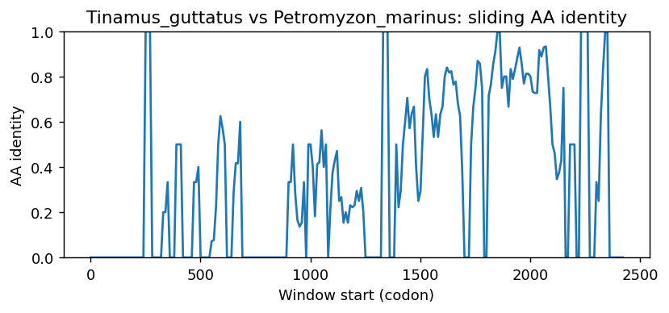
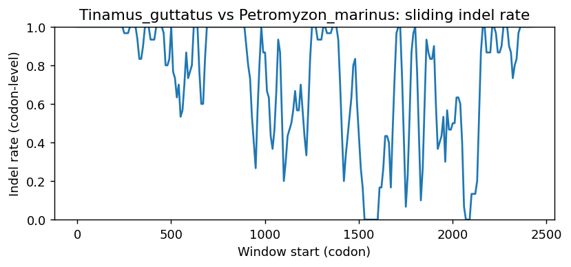
Tinamus_guttatus vs Sinocyclocheilus_rhinocerous
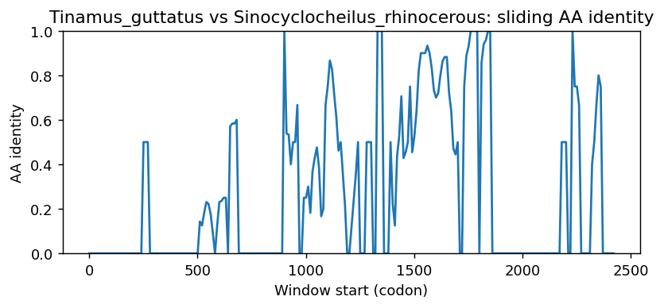
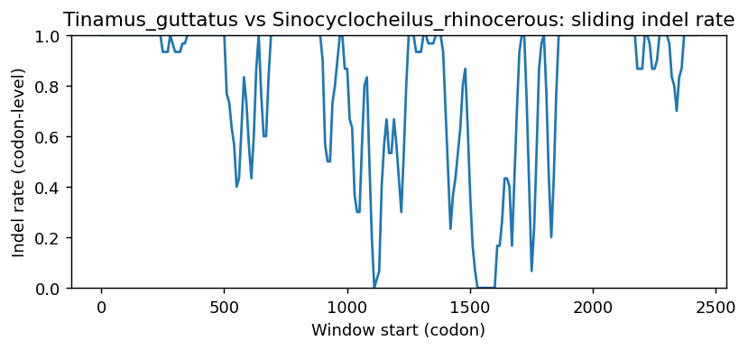
Tinamus_guttatus vs Pundamilia_nyererei
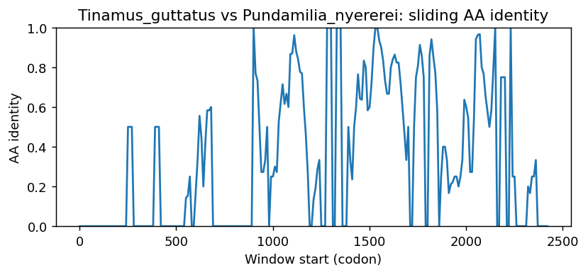
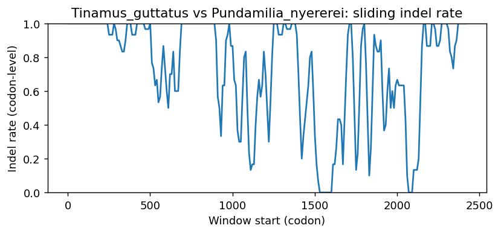
Tinamus_guttatus vs Silurus_meridionalis
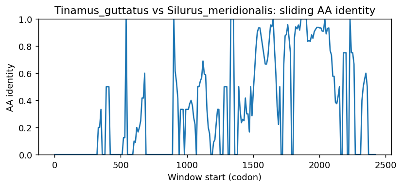
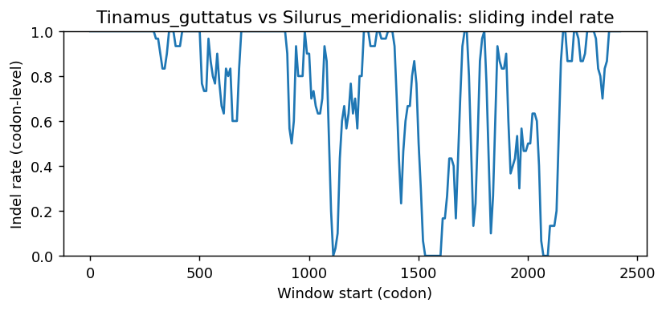
Tinamus_guttatus vs Tachysurus_vachellii
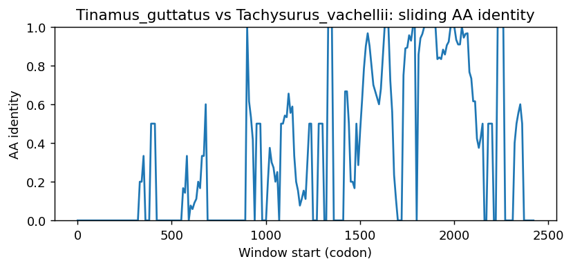
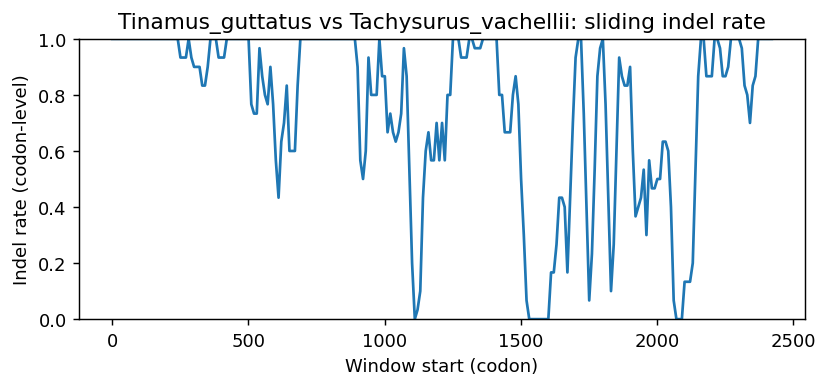
Tinamus_guttatus vs Tachysurus_fulvidraco
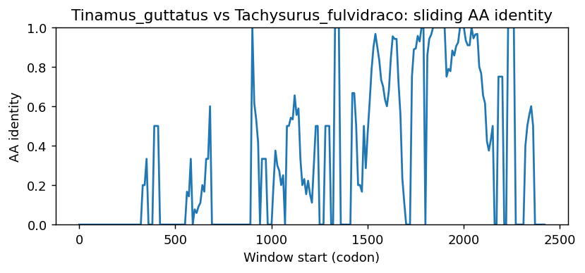
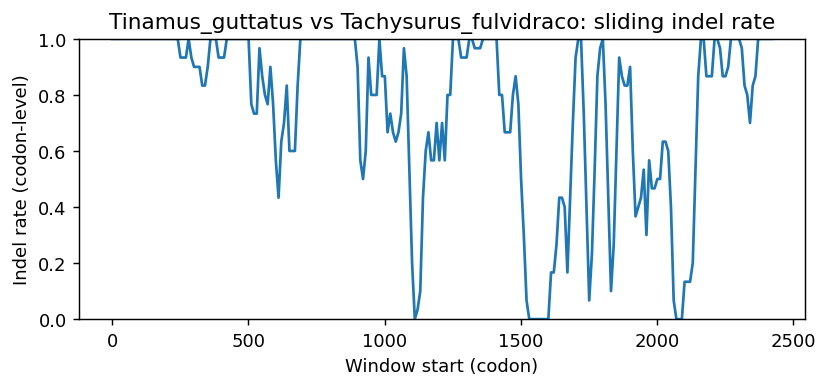
Methods (brief)
- CDS are translated (genetic code 1); proteins aligned by MAFFT when available, otherwise a progressive global aligner (BLOSUM62). Protein MSA is back-translated into a codon MSA.
- Pairwise metrics: AA/NT identities on aligned nongap positions; Ts/Tv; single-hit syn/nonsyn counts; gap events and largest contiguous gap cluster (codons); sliding-window AA identity and codon-level indel rate.
- Per-sequence diagnostics: GC content/skew, CpG density, AA low-complexity fraction via SEG-like entropy windows (win=12, H<2.2), and NT tandem repeats (homopolymers =5; di-nt =4 copies; tri-nt =3 copies).
- Correlations: Pearson/Spearman between AA identity and |GC difference|, mean AA LCR fraction, and mean NT repeat fraction across pairs.
- Risk classifier: combines identity, coverage, longest identical block, low-ID windows, max indel cluster, and up-ranks risk when mean LCR =0.25 or mean repeat =0.10 (soft-masking can remove seeds and reduce sensitivity).
Artifacts: pairwise_metrics.csv, per_sequence_composition.csv, correlations.csv, alignment_protein.faa, alignment_codon.fna.